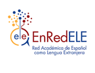
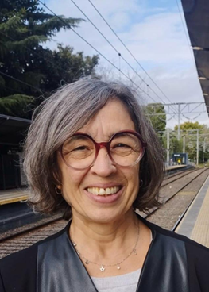
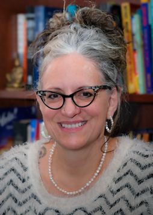
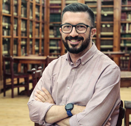
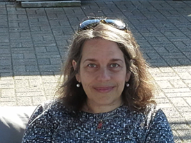
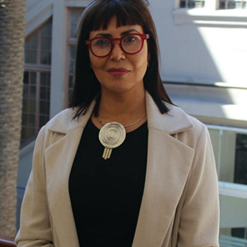
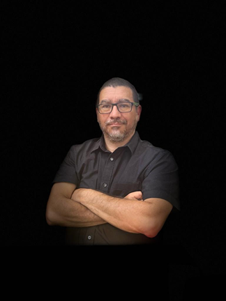
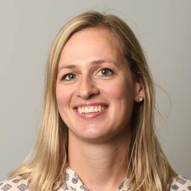
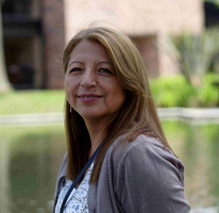

Bibiana María Zapata Prieto
Juan Felipe Zuluaga Molina
César Augusto Rodríguez Ledesma
Miltón C. Rodríguez García
Código JavaScript para el libro: Joel Espinosa Longi, IMATE, UNAM.
Recursos interactivos: DescartesJS
Fuentes: Lato y UbuntuMono
Red Educativa Digital Descartes
Medellín (Colombia)
descartes@proyectodescartes.org
https://proyectodescartes.org
Proyecto iCartesiLibri
https://proyectodescartes.org/iCartesiLibri/index.htm
Esta obra está bajo una licencia Creative Commons 4.0 internacional: Reconocimiento-No Comercial-Compartir Igual.
LENGUAJE Y CIENCIA recoge los textos de escritura académica que los estudiantes y docentes del ITM, y otras instituciones de educación superior, realizan desde su área de formación.
© INSTITUCIÓN UNIVERSITARIA ITM
Publicación del pregrado Interpretación y Traducción Lengua de Señas Colombiana - español adscrita al Departamento de idiomas de la Facultad de Artes y Humanidades
Alejandro Villa Gómez
Decano Facultad de Artes y Humanidades
Carlos Andrés Caballero Parra
Jefe del Departamento de Idiomas
Gustavo Adolfo Jaramillo Cardona
Facultad de Artes y Humanidades
Lenguaje y Ciencia / Juan Felipe Zuluaga Molina y Bibiana María Zapata Prieto, editores. Suplemento n.° 1. (2025). - Medellín: Institución Universitaria ITM. Facultad de Artes y Humanidades. Departamento de Idiomas, 2025. 180 páginas
1. Publicación seriada. 2. Escritura académica. 3. Lenguaje y Ciencia. I. Zuluaga Molina, Juan Felipe (ed.) II. Zapata Prieto, Bibiana María (ed.) III. Institución Universitaria ITM. Facultad de Artes y Humanidades. Departamento de Idiomas. Catalogación en la publicación - Biblioteca ITM
Calle 73 No. 76A-354 Medellín-Colombia
(574) 4600727 ext. 5699
E-mail: lenguaje@itm.edu.co
www.itm.edu.co
Resúmenes de presentaciones en el 9º Encuentro Internacional de Español como Lengua Extranjera
Enseñanza, aprendizaje y prácticas emergentes en ELE/ELA/L2 - Trayectorias, contextos y mediaciones
Red Académica de Español como Lengua Extranjera
Asociación Colombiana de Universidades
Institución Universitaria ITM
Universidad de Antioquia
Universidad Pontificia Bolivariana
Bibiana María Zapata Prieto
Juan Felipe Zuluaga Molina
César Augusto Rodríguez Ledesma
Miltón César Rodríguez García
Isabella Ramírez Rodríguez
Agosto de 2025
Instituciones de educación superior y colectivos pertenecientes a EnRedELE - 2025
Colectivo Somos Profesores ELE Colombia
Instituto Caro y Cuervo
Institución Universitaria ITM
Pontificia Universidad Javeriana - Bogotá
Universidad Autónoma de Bucaramanga
Universidad Cooperativa de Colombia, seccional Bucaramanga
Universidad de Antioquia
Universidad de Caldas
Universidad de La Sabana
Universidad EAN
Universidad Industrial de Santander
Universidad Libre de Colombia
Universidad Pedagógica Nacional
Universidad Pedagógica y Tecnológica de Colombia - Tunja
Universidad Pontificia Bolivariana - Medellín
Universidad Sergio Arboleda

Bibiana María Zapata Prieto
| Información | Correo electrónico |
|---|---|
|
Bibiana María Zapata Prieto Universidad de La Sabana Líder del comité organizador |
bibiana.zapata@unisabana.edu.co |
|
Juan Felipe Zuluaga Molina Institución Universitaria ITM Líder del comité académico |
juanzuluagam@itm.edu.co |
|
Johana López Mora Somos Profesores ELE Colombia Líder del comité de comunicaciones |
somosprofesoreselecolombia@gmail.com |
|
Andrea Marcela Baquero Caldas Instituto Caro y Cuervo Miembro del comité académico |
andrea.baquero@caroycuervo.gov.co |
|
Juan Carlos González Liévano Universidad Sergio Arboleda Responsable y diseñador de la página del evento y miembro del comité de comunicaciones y del comité organizador |
juanc.gonzalez@usa.edu.co |
| Información | Correo electrónico |
|---|---|
|
Laura Cardona Zapata Universidad de Antioquia Miembro del comité de comunicaciones |
ele@udea.edu.co |
|
Adriana Martínez Universidad Autónoma de Bucaramanga Miembro del comité académico |
amartinez18@unab.edu.co |
|
Manuel Medardo Montero Cádiz Universidad Cooperativa de Colombia, Bucaramanga Miembro del comité académico |
manuel.monteroc@campusucc.edu.co |
|
Gladys Yolanda Pasuy Guerrero Universidad de Caldas Miembro del comité organizador |
gladys.pasuy@ucaldas.edu.co |
|
Sara Lucía Monroy Tuta Universidad EAN Miembro del comité académico |
slmonroy@universidadean.edu.co |
|
Magda Patricia Bogotá Barrera Universidad Pedagógica Nacional Miembro del comité académico |
mbogota@pedagogica.edu.co |
|
Alberto Ramírez Avendaño Universidad Pedagógica y Tecnológica de Colombia (UPTC Tunja) Miembro del comité académico |
alberto.ramirez@uptc.edu.co |
|
Juliana Gómez Medina Pontificia Universidad Javeriana, Bogotá Miembro |
gomezmj@javeriana.edu.co |
| Información | Correo electrónico |
|---|---|
|
Jorge Enrique Estupiñan Ordoñez Universidad Pontificia Bolivariana(Medellín) Miembro comité organizador y Miembro comité de comunicaciones |
jorgee.estupinan@upb.edu.co |
|
Jorge Cossio Institución Universitaria ITM Miembro comité de comunicaciones |
jorgecossio@itm.edu.co |
|
Gustavo Jaramillo Cardona Institución Universitaria ITM Miembro comité organizador |
gustavojaramillo@itm.edu.co |
|
Edga Mireya Uribe Universidad Industrial de Santander Miembro comité de comunicaciones |
edgauribe@gmail.com |
Presentación
La Red Académica de español como lengua extranjera, de la Asociación Colombiana de Universidades, ASCUN, fue creada en abril de 2007 en Bogotá, Colombia, como iniciativa de un grupo de docentes de nueve universidades que desde el año 2005 trabajan conjuntamente por el desarrollo del español como lengua extranjera. Dicha iniciativa, acogida por un grupo amplio de instituciones de educación superior, cuenta actualmente con veintidós universidades adscritas y un colectivo de profesores que ha organizado, con esta, nueve versiones del Encuentro Internacional de Español como Lengua Extranjera.
Pasados seis años de la situación de emergencia sanitaria a nivel mundial provocada por la pandemia del COVID19, que ha generado un desarrollo tecnológico sin precedentes, pero favorable, y el desarrollo de valiosas herramientas de comunicación que han dado continuidad a la actividad académica que dieron lugar a la experiencia del 7° encuentro que se realizó en modalidad remota, se resolvió realizar el 8° y el 9° evento en modalidad híbrida: presencial y remota. Se espera contar con una amplia acogida por parte de la comunidad académica y científica interesada en la enseñanza-aprendizaje del español como lengua extranjera (ELE), lengua adicional (ELA) y segunda -o tercera- lengua (L2+).
Con esta doble modalidad de participación esperamos que esta novena versión del Encuentro Internacional de Español como Lengua Extranjera sea un escenario que permita mayor participación, tomando en cuenta las nuevas realidades que vivenciamos en esta particular época y que indudablemente se reflejan en el ejercicio de nuestra labor docente.
Objetivo
Congregar a los diferentes públicos interesados en los procesos de enseñanza y aprendizaje del español como lengua extranjera (ELE), lengua adicional (ELA) y L2+ para el intercambio, análisis, discusión y presentación de investigaciones y experiencias sobre temáticas que tiendan a la innovación en los contextos de aplicación.
Líneas de investigación
- Globalización e Internacionalización en contextos innovadores de ELE/ELA/L2+
- Internacionalización y política lingüística: glocalización, glotopolítica, estudios transatlánticos y gobernanzas idiomáticas.
- Interculturalidad y perspectivas críticas en español lengua adicional: identidad, decolonialidad y perspectiva crítica, actitudes y performatividades lingüísticas y culturales plurales.
- Enseñanzas y aprendizajes de español para fines humanitarios, comunidades ancestrales y sordoseñantes, y mediaciones en contextos de crisis.
- Mediación, creación, didactización y curaduría de medios, textos, tecnologías e IA en español lengua adicional.
- Nuevas tendencias de enseñanza, aprendizaje y evaluación, aplicaciones en el aula, currículos y programas de formación en español lengua adicional.
- Formación, investigación y tensiones de la profesionalización en ELE/ELA/L2+.
Prólogo
En 2025, la Red designó para la novena versión del evento el lema Enseñanza, aprendizaje y prácticas emergentes en ELE/ELA/L2: trayectorias, contextos y mediaciones. Desde el inicio, se definió continuar con la virtualidad y la hibridación, en coherencia con los resultados exitosos de las versiones anteriores. Durante 2023 y 2024, esta decisión se consolidó como la mejor alternativa para garantizar la realización del encuentro y ampliar su alcance.
Hoy, al materializarse este espacio académico, destacamos con satisfacción el compromiso de todos los participantes, quienes hicieron posible un evento de alta calidad. Aunque siempre existen aspectos por mejorar, nos enorgullece haber fortalecido la proyección internacional y haber facilitado la participación sin barreras geográficas, reafirmando la hibridación como una oportunidad para democratizar el conocimiento.
Expresamos nuestro agradecimiento a plenaristas, ponentes, talleristas, organizadores, profesores, estudiantes y equipos de apoyo, cuyo trabajo hizo posible esta experiencia. Esta revista recoge solo una parte de lo vivido, esperando que haya generado nuevas ideas, redes académicas y motivaciones investigativas.
Confiamos en que en la próxima versión podamos reencontrarnos presencialmente y recuperar esos espacios de interacción que fortalecen nuestra comunidad académica
¡Hasta el décimo Encuentro, Dios mediante!
Bibiana María Zapata Prieto
Plenarias
Talleres
Ponencias
El español de Ixs estudiantes brasileñxs: ¿lengua segunda, lengua adicional, lengua extranjera? Un fenómeno social, político, lingüístico, intercultural y decolonial
Claudia Fernández
Información biográfica

Doctora en Lingüística aplicada por la Universidad Nebrija (España), Máster en Enseñanza de español/LE por la misma universidad y Licenciada en Letras por la Facultad de Filosofía y Letras de la Universidad de Buenos Aires. Actualmente, trabaja en el Instituto de Lingüística de la Facultad de Filosofía y Letras, y es docente en la Universidad Nacional Arturo Jauretche, donde dirige proyectos de Investigación y de Vinculación territorial, ambos relacionados con los procesos de lectura y escritura en ámbitos académicos. Forma parte del Programa de Fortalecimiento de la lectura, la escritura y la oralidad (PROFLEO) y del Equipo de Etnolingüística del Instituto Nacional de Antropología y Pensamiento Latinoamericano (INAPL). Imparte seminarios sobre metodología en la Especialización de Profesores de ELE de la Universidad de El Salvador. Entre sus publicaciones figura la coordinación editorial del Manual de Español para extranjeros Agencia ELE 3 y 4 (SGEL), y la autoría y coautoría de la Colección “Experto en Enseñanza de español lengua extranjera” (Ed. Nebrija).¿Qué debemos tener en cuenta al enseñar español a hablantes de herencia?
Kim Potowski
Información biográfica

Catedrática de lingüística hispánica en la Universidad de Illinois en Chicago. Su investigación se centra en el español de Estados Unidos. Dirigió durante 18 años el programa de español para hablantes de herencia y es fundadora de su programa de estudios de verano en Oaxaca, México, donde cursó un año como investigadora Fulbright. Entre sus esfuerzos por promover el bilingüismo en general está su charla de 2013 en TEDx titulada “No child left monolingual” (Que ningún niño se quede monolingüe). Es autora de varios libros, entre ellos El español de los Estados Unidos (con Anna María Escobar); Gramática española: Variación social (con Naomi Shin), Cultivando jardines: Enseñar el español a hablantes de herencia y Conversaciones escritas.¿Cómo enseñar español a los que más lo necesitan? Herramientas teóricas y recursos didácticos
Mario de la Fuente
Información biográfica

Doctor en Filología Hispánica y máster en Dirección y Administración de Empresas (MBA) por la Universidad de León (España). Trabaja como profesor de español para inmigrantes en la Fundación Sierra Pambley desde 2007. Ha impartido docencia universitaria en las asignaturas de Sintaxis, Análisis Sintáctico, Lingüística General, Psicolingüística y Enseñanza y Aprendizaje de la Lengua Castellana en la Universidad de León, así como varios cursos y conferencias en España y el extranjero sobre enseñanza de español a inmigrantes. De 2016 a 2019 dirigió el curso «Enseñar español a inmigrantes, una labor apasionante» en la Universidad Internacional Menéndez Pelayo.Red de Español en América Latina: fortaleciendo la identidad académica y profesional de la región
Vera Cerqueiras
Información biográfica

Vera Cerqueiras es Profesora y Licenciada en Letras por la Universidad de Buenos Aires y Master en Formación de profesores de ELE por la Universidad de Barcelona. Se ha desempeñado como Coordinadora Académica de español en el Laboratorio de Idiomas de la Universidad de Buenos Aires y desarrollado tareas como docente, evaluadora, capacitadora, formadora de formadores y de gestión curricular en el área de español como lengua materna y extranjera en diferentes universidades locales e internacionales. Ha llevado a cabo numerosos proyectos de elaboración de material didáctico y participado en el diseño de planes curriculares para grupos multi y monolingües y de objetivos específicos, incluidos proyectos para poblaciones migrantes y refugiadas. Dicta talleres y cursos de capacitación y actualización en ámbitos locales e internacionales como el instituto Cervantes y la Academia norteamericana de lengua española (ANLE). En la actualidad es coordinadora, docente e investigadora del Programa de Español como lengua extranjera (PROELE) dentro del Área de Estudios Latinoamericanos en FLACSO Argentina, donde dirige el Diploma Superior en Enseñanza y Gestión del Español y coordina el Diploma Superior en Gestión de la diversidad lingüística en contextos de escolarización. Integra además la Comisión Docente de la institución.Sonia Toledo Azócar
Información biográfica

Sonia Toledo Azócar es doctora en Filología Hispánica por la Universidad de Valladolid. Es docente e investigadora en español lengua extranjera. Sus líneas de especialización son la Pragmática Interlingüística e Intercultural y la Didáctica del español como lengua segunda. Es autora de manuales de español, libros teóricos en el campo disciplinar y artículos científicos. Es miembro fundadora de REDEAL y coordinadora de su Comisión académica.Gustavo Jaramillo Cardona
Información biográfica

Gustavo Jaramillo Cardona. Magíster en lenguas modernas de la Universidad de París III, Sorbonne Nouvelle. Docente de inglés, francés y español para extranjeros por más de 34 años. Actual jefe del Centro de Idiomas de la Institución Universitaria ITM de la ciudad de Medellín. Vasta experiencia en diseño curricular, creación de materiales físicos y digitales, publicaciones, formación docente, participación en redes académicas y coordinación de programas en ELE tanto en Colombia como en otros países. Fue miembro de la Comisión Académica de la Asociación SICELE; es miembro activo de la Red académica de español como lengua extranjera –EnRedELE– y hace parte del Consejo Directivo de REDEAL.Lenguas extranjeras para el desarrollo sostenible: el español para estudiantes noruegos de negocios
Margrete Dyvik-Cardona
Información biográfica

Es profesora asociada de lingüística española en la Escuela Noruega de Economía (NHH), en el Departamento de Comunicación Profesional e Intercultural. Es doctora en lingüística española por la Universidad de Bergen. Imparte clases de español, así como de comunicación estratégica y política para estudiantes de negocios, con un enfoque en la relevancia de las lenguas y la comunicación en la sociedad y en las relaciones interculturales. Aunque su tesis doctoral se centró en el tiempo y aspecto verbal, sus intereses de investigación actuales incluyen la lingüística textual y de corpus, así como el análisis del discurso, con énfasis en temas sensibles como la pobreza y la inmigración. Otras áreas de especialización incluyen las metáforas en el discurso económico, la lingüística general y contrastiva, así como la enseñanza de la comunicación estratégica y política, la comunicación para la sostenibilidad global y la redacción académica.Promoción de la competencia conversacional para la construcción de un hablante intercultural en el aula de ELE
Yolanda Pasuy
Información biográfica

Doctora en Educación por la Universidad de Caldas, Magíster en Lingüística Hispánica por el Instituto Caro y Cuervo, Licenciada en Filología e Idiomas por la Universidad INCCA de Colombia. Es docente de carrera de la Universidad de Caldas, adscrita al Departamento de Lingüística y Literatura de la Facultad de Artes y Humanidades, donde participa en proyectos de investigación y proyección de la Institución. En el momento coordina la maestría en Lingüística aplicada del Español como Lengua Materna y como Lengua adicional y el Programa de español para extranjeros ESPAÑOL PARA EL MUNDO. Sus intereses de docencia e investigación giran en torno a la Fonética y la fonología, la Sociolingüística y la Lingüística aplicada a la enseñanza de las lenguas. También participa como coordinadora del Semillero de Sociolingüística y hace parte del grupo de investigación LINGULIT del Departamento de Lingüística y Literatura de la Universidad de Caldas. Ha escrito y publicado algunos libros como Las afasias desde una mirada Lingüístico-cognitiva, Patrones de adquisición de los fonemas del español y fue co-coordinadora del Libro Enseñanza, lengua y cultura en ELE de la red ENREDELE de ASCUN.De aquí a la Patagonia: tratamiento didáctico de unidades léxicas con estereotipos de gentilicios y topónimos en la clase de ELE/L2
Diana Rocío Umaña Buitrago; Gloria Viviana Nieto Martín
Resumen
Cada vez la enseñanza explícita de la fraseología toma mayor relevancia en la clase de ELE/2, como estrategia integradora para el desarrollo de la competencia léxica y la competencia intercultural. En consecuencia, se requiere la creación de propuestas didácticas que faciliten el abordaje de las unidades fraseológicas. En este sentido,
en la séptima fase del Corpus léxico del español de Colombia CorlexCo de la Maestría en Enseñanza de Español como Lengua Extranjera y Segunda Lengua del Instituto Caro y Cuervo, nos proponemos ahondar en los estereotipos socioculturales (nacionales e internacionales), a través del estudio de unidades léxicas con gentilicios y topónimos usadas en Colombia (ej. a la boloñesa, arroz chino,
bandeja paisa, chanza pachuna, chilena, conejillo de Indias, de aquí a Pekín, ginebra, hacerse el gringo, pagar a la americana, papas a la francesa, paseo bugueño, ¡Qué elegancia la de Francia!, suero costeño, etc.).
En este taller, a través de la interacción con los participantes, comenzaremos por resaltar la frecuencia de uso de estas expresiones, así como los estereotipos socioculturales que reflejan, además de mostrar su posible aprovechamiento en el desarrollo de la competencia léxica y la competencia intercultural. Luego, presentaremos una propuesta didáctica para el abordaje de estas expresiones y reflexionaremos sobre el diseño de actividades concretas que pueden facilitar su enseñanza explícita en la clase de ELE/L2.
Instituto Caro y Cuervo
diana.umana@caroycuervo.gov.co
Información biográfica
Instituto Caro y Cuervo
viviana.nieto@caroycuervo.gov.co
Información biográfica
Mapeo de textos auténticos: una propuesta didáctica para la enseñanza del léxico y la cultura colombiana
William Andrés Betancourt Villota; Francisco de la Torre
Resumen
Este taller teórico-práctico presenta una propuesta didáctica basada en el mapeo de textos y el realce de input léxico para la enseñanza del español como lengua extranjera (ELE), específicamente para abordar la cultura colombiana a partir de textos auténticos. Partimos de la premisa de que la lengua funciona en bloques léxicos, y que su enseñanza debe reflejar esta característica para favorecer la adquisición y uso del vocabulario en contextos auténticos.
La propuesta se fundamenta en una secuencia didáctica diseñada para estudiantes de nivel B2, donde se integran estrategias de identificación y uso de combinaciones léxicas, dichos y marcadores discursivos en textos auténticos. A través del realce de input, los estudiantes son guiados en la observación y análisis de bloques léxicos clave, facilitando su reconocimiento y empleo en situaciones comunicativas diversas.
El mapeo de textos permite a los aprendientes establecer conexiones entre elementos léxicos, favoreciendo la retención y reutilización del vocabulario. Se emplean técnicas de codificación visual y categorización semántica, lo que potencia la conciencia metalingüística y el aprendizaje autónomo.
La ponencia responde a la línea de investigación "Mediación, creación, didactización y curaduría de medios, textos, tecnologías e IA en español lengua adicional", ya que aborda el diseño de materiales didácticos y la mediación pedagógica en la enseñanza del léxico en ELE. Se presentará la secuencia didáctica "Pastuso come pastuso", la cual es el resultado del trabajo final de la asignatura Enseñanza de Léxico de la Maestría en Enseñanza de Español como Lengua Extranjera y Segunda Lengua (modalidad virtual) del Instituto Caro y Cuervo y, se discutirán los beneficios del enfoque léxico frente a enfoques más tradicionales.
Este trabajo es relevante tanto para docentes de ELE como para investigadores interesados en la didáctica del léxico y en estrategias innovadoras para la enseñanza de vocabulario en español.
Palabras clave: Enseñanza del léxico, enfoque léxico, bloques léxicos, mapeo de textos, realce de input, ELE, textos auténticos, cultura colombiana.
William Andrés Betancourt Villota
Instituto Caro y Cuervo
william.betancourt@caroycuervo.gov.co
Información biográfica
Instituto Caro y Cuervo
francisco.delatorre@caroycuervo.gov.co
Información biográfica
El sistema verbal del español: del tiempo al espacio
Mónica Andrez López Cantillo; Andrea Marcela Baquero Caldas
Resumen
Es probable que los profesores de ELE tengamos dudas sobre las diferentes formas verbales del español, que van desde la enseñanza a partir de las diferencias temporales de estas formas, hasta los matices de significado que pueden aportar el modo o el aspecto. Al no tener claridad sobre estas cuestiones, los profesores podemos causar mayores dificultades para la comprensión de estos temas por parte de los estudiantes.
En consecuencia, el objetivo de este taller es reflexionar en torno al abordaje del sistema verbal del español desde una perspectiva significativa, de tal forma que los participantes comprendan los rasgos característicos de cada una de las formas que componen dicho sistema y adquieran herramientas para trabajarlos en el aula. Para llevar a cabo lo anterior, se usará la “Guía de formación en gramática para profesores de ELE: el sistema verbal”, que nos encontramos diseñando en el marco de la línea de investigación de enseñanza de español como lengua extranjera y segunda lengua del Instituto Caro y Cuervo.
El taller se desarrollará teniendo en cuenta 4 momentos diferentes:
-Apertura: en un primer momento, se hará una introducción al tema y se plantearán algunas preguntas iniciales sobre el sistema verbal del español.
-Práctica: posteriormente, los participantes resolverán dos actividades para aplicar lo visto en la explicación anterior.
-Conclusión: para terminar, se hará el cierre del taller mediante la revisión de las preguntas planteadas al inicio y se compartirán las reflexiones finales.
Instituto Caro y Cuervo
monica.lopez@caroycuervo.gov.co
Información biográfica
Instituto Caro y Cuervo
andrea.baquero@caroycuervo.gov.co
Información biográfica
Magic School: Inteligencia artificial para la enseñanza de ELE
María Angélica Meza Rodríguez
Resumen
Este taller tiene como objetivo explorar el uso de la plataforma Magic School como una herramienta innovadora en la enseñanza del español como lengua extranjera (ELE) gracias al potencial de la Inteligencia Artificial (IA) en el aula. Durante la sesión, se analizará cómo esta plataforma promueve el aprendizaje activo, la colaboración y la personalización del proceso educativo, al mismo tiempo que optimiza tareas como la planificación de clases, el diseño de actividades y la evaluación.
Esta sesión está dirigida a profesores y docentes en formación en el ámbito de la enseñanza de ELE que busquen incorporar la IA para posicionar al estudiante en el centro del proceso de aprendizaje.
El taller combinará principios teóricos con ejercicios prácticos. Primero, se abordará la escritura de prompts efectivos y posteriormente, se implementarán en Magic School. Los participantes explorarán y practicarán con las funcionalidades más útiles de esta plataforma, tales como el generador de planes de lecciones modelo 5E, el generador de preguntas de videos de YouTube, el nivelador de texto y el generador de rúbricas.
Instituto Caro y Cuervo
maria.meza@caroycuervo.gov.co
Información biográfica
Y si nos asociamos ¿yo qué recibo?
Johana Andrea López Mora
Resumen
"Somos Profesores ELE Colombia" es un colectivo en permanente construcción que busca organizar espacios de reflexión y de cooperación académica entre colegas. Desde su primera actividad hace ya más de 6 años, nuestra red ha realizado más de 30 eventos de cooperación académica en el formato #CharlasELEColombia, hemos compartido ofertas de empleo, hemos colaborado con muchos y muchas colegas haciendo puentes, conectado laboralmente, facilitando materiales, compartiendo experiencias y haciendo parte de EnRedELE desde 2022 pero principalmente reflexionando entre colegas sobre nuestro trabajo y nuestro futuro como una fuerza laboral importante en el país.
Hemos participado en los eventos de EnredELE desde 2019 cuando presentamos el colectivo y en 2023 comenzamos el diálogo en Cali para empezar a pensarnos como una Asociación. Como todo diálogo a veces estamos llenos de silencios que también nos han permitido reflexionar desde varios escenarios lo que realmente queremos como colectivo.
En esta mesa redonda que proponemos, al igual que en la edición anterior, queremos no solo socializar para quienes no conocen nuestro colectivo, sino fortalecer y consolidar el trabajo realizado, proponiendo (ahora sí), dar el paso a una formalización de la red de cooperación académica presentando y discutiendo los estatutos que deberían o no incluirse en la consolidación de tal colectivo como Asociación.
Colectivo Somos Profesores ELE Colombia
somosprofesoreselecolombia@gmail.com
Información biográfica
Mientras me curo del cora: propuesta didáctica basada en el enfoque léxico
Gabriel Amancio de Oliveira; Gloria Viviana Nieto Martín
Resumen
La implementación del enfoque léxico en la enseñanza de lenguas adicionales ofrece herramientas que potencian el aprendizaje intencional del léxico y de otras subcompetencias asociadas a este (fonética, ortografía, ortoépica, morfología, semántica, pragmática).
En cuanto al uso de canciones en las clases de ELA, su potencial puede desarrollar en los alumnos habilidades orales, así como estrategias lectoras y escritoras debido a su contenido lingüístico, además de ayudar a relajar el ambiente de la clase, rompiendo con la monotonía general (Maria, 2009; López, 2005). Este taller tiene como objetivo dialogar sobre la aplicación práctica del enfoque léxico mediante el mapeo de los contenidos léxicos de la canción “Mientras me curo del cora” de la artista colombiana Karol G.
Conversaremos sobre los criterios de selección de canciones para abordar en la clase de ELE, los criterios de selección de unidades léxicas para el mapeo de la letra de una canción y el diseño de actividades para las tres fases de audiovisualización de una canción (antes, durante y después). De esta forma, concluiremos que trabajar con las canciones como recurso didáctico desde el enfoque léxico enriquece los conocimientos lingüísticos y socioculturales de los aprendientes y amplía su perspectiva del mundo.
Instituto Caro y Cuervo
gabriel.deolivera@caroycuervo.gov.co
Información biográfica
Instituto Caro y Cuervo
viviana.nieto@caroycuervo.gov.co
Información biográfica
Spanish corner: Una experiencia "exitosa" de intercambio de lengua
Jader Jiménez Ríos
Resumen
Este taller teórico-práctico busca presentar los aciertos y desaciertos de un intercambio de lengua, a partir del análisis de la experiencia desarrollada durante dos años y medio, por la escuela de español para extranjeros: RAICES: Spanish & culture, en Cartagena -Colombia. Este espacio extracurricular diseñado por nuestra escuela, fue denominado: “Spanish corner”. En él, procuramos crear las condiciones propicias para la interacción eficaz y el desarrollo de las competencias, principalmente orales, pero también escritas, en la lengua Meta. Bebidas, conversaciones amenas y didactizadas, y actividades lúdicas, nos permitían un espacio de confianza y diversión donde nuestros estudiantes y cualquier extranjero en la ciudad podía practicar su español en un bar; pero, con profesores expertos y atentos a sus necesidades comunicativas.
Además de esto, reflexionaremos de forma participativa junto a los asistentes al taller, sobre nuestras experiencias en otros intercambios de lengua, que hemos visitado en la ciudad de Medellín y en otras ciudades. Teniendo en cuenta algunos criterios que consideramos pertinentes a la hora de la inmersión cultural y la interacción en estos espacios. Los cuales nos permitirán ver una variación en el alcance de un aprendizaje significativo a partir de los intereses u objetivos, y por consecuente, de la estructura y la naturaleza misma del evento.
r.spanish.c@gmail.com
Información biográfica
Usos de la IA de WhatsApp en la clase
Johana Andrea López Mora
Resumen
Es innegable que el uso de la Inteligencia artificial es hoy una herramienta invaluable en las clases de lenguas. Sus implicaciones son tan amplias que creo que todavía no nos hemos dado cuenta de la validez que tiene no solo en nuestro trabajo sino en la vida cotidiana.
Siempre me pregunté cómo las IA podían ayudarme en el trabajo. Cuando comenzó ChatGPT a finales de 2022, me di cuenta de que había mucha reticencia por parte de mucha gente de mi entorno en su uso. Sin embargo, como una curiosa de las novedades, empecé a cacharrear -como decimos-. en la tecnología y empecé a encontrar nuevas herramientas además de ese chat ampliamente publicitado. Luego, con el paso del tiempo y la aparición de nuevas tecnologías me di cuenta de que el alcance es infinito, pero debía aterrizarlo a una herramienta simple si quería usarlo en clase.
Los beneficios que trae la IA y su uso en el proceso de aprendizaje de la lengua meta son me sorprendieron. Creo que no dimensionamos (a veces ni imaginamos) el beneficio del uso de esta herramienta en una clase. En efecto, tiene un sentido que va más allá de simplemente encontrar respuestas rápidas sobre un tema o un hecho específico o incluso como una simple herramienta de traducción.
Colectivo Somos Profesores ELE Colombia
johadecker@gmail.com
Información biográfica
Competencia afectiva del profesor de ELE en el contexto internacional: retos y perspectivas para los programas de formación
María Clemencia Silva Agudelo; Sara Lucía Monroy Tuta;
Cristina Suárez Pareja
Resumen
El auge del español en el contexto internacional ha generado la creación de un importante número de plazas docentes para su enseñanza en diferentes niveles y escenarios. De hecho, durante la última década, varios países de Asia Oriental se han consolidado entre los principales destinos para ejercer como profesor de ELE. Ahora, si se considera que, entre las competencias clave que debe tener el docente de ELE, el Instituto Cervantes (2012) incluye la de “gestionar sentimientos y emociones en el desempeño de su trabajo”,
reviste especial importancia analizar la dimensión afectiva del docente nativo de español que se desenvuelve en la disciplina fuera de un país hispanohablante y en un contexto cultural muy diferente al propio. En ese orden de ideas, el panel se centra en la reflexión sobre la competencia afectiva de este profesorado (Manzanares y Guijarro, 2023). Para ello, se toma como referente el resultado de una investigación en la que se entrevistaron 10 docentes colombianos que ejercen como profesores de ELE en China, Japón y Corea. Con base en sus experiencias, se proponen tres ejes temáticos para la discusión: a) los retos de
enseñar el idioma en contextos en los que la variedad centro-peninsular es la que goza de mayor prestigio social; b) los desafíos pedagógicos y didácticos que supone enseñar español en culturas académicas que priorizan lo gramatical sobre lo comunicativo; y, c) las estrategias que utilizan para regular sus emociones, motivarse en el trabajo e implicarse en el desarrollo de la inteligencia emocional de sus alumnos.
Referencias bibliográficas
Instituto Cervantes. (2012). Las competencias clave del profesorado de segundas lenguas y extranjeras.
https://cvc.cervantes.es/Ensenanza/biblioteca_ele/competencias/competencias_profesorado.pdf
Manzanares, J. C., & Guijarro, J. R. (2023). Factores afectivos en la enseñanza de español como lengua extranjera en contextos sinohablantes: una revisión de la literatura.
Forma y Función, 36(1).
https://doi.org/10.15446/fyf.v36n1.100789
Universidad EAN
mcsilva@universidadean.edu.co
Información biográfica
Universidad EAN
Información biográfica
Universidad EAN
Información biográfica
Diseño de Hiperdocumentos (HyperDocs) para la enseñanza de ELE
William Andrés Betancourt Villota; Leidy Camila García Acevedo;
Stephanie Chris Martínez Méndez
Resumen
Este taller teórico-práctico presenta un hiperdocumento diseñado para la enseñanza del español como lengua extranjera (ELE) desde un enfoque innovador que responde a las cuatro habilidades del siglo XXI: creatividad, colaboración, pensamiento crítico y comunicación. Este recurso didáctico fomenta la autonomía, la integración y la metacognición en el aprendizaje de ELE.
El taller está dirigido a docentes, investigadores y formadores en ELE interesados en incorporar herramientas digitales en sus clases. Es el resultado de una propuesta didáctica desarrollada en la asignatura Herramientas TIC y TAC en el Aula de Lengua Extranjera, dentro de la Maestría en Enseñanza de Español como Lengua Extranjera y Segunda Lengua del Instituto Caro y Cuervo.
A través, de una metodología interactiva, los participantes explorarán el hiperdocumento estructurado en siete fases:
• Enganchar- Actividades para captar el interés del estudiante.
• Explorar- Descubrimiento guiado sobre tradiciones navideñas en Colombia.
• Explicar- Presentación de conceptos clave a través de recursos digitales.
• Compartir- Trabajo colaborativo y socialización de aprendizajes.
• Reflexionar- Evaluación metacognitiva del proceso.
• Extender – Actividades adicionales para profundizar.
Los asistentes participarán activamente en el desarrollo de este hiperdocumento y tendrán las herramientas necesarias para que integren este recurso y sus propios en sus contextos educativos.
Finalmente, se puede afirmar que los hiperdocumentos facilitan una enseñanza más flexible y personalizada, permitiendo el aprendizaje colaborativo y el trabajo autónomo. Esta propuesta se enmarca en la línea de investigación Mediación, creación, didactización y curaduría de medios, textos, tecnologías e IA en español como lengua adicional, promoviendo una enseñanza innovadora y efectiva.
William Andrés Betancourt Villota
Secretaría de Educación Departamental de Nariño
william.betancourt@caroycuervo.gov.co
Información biográfica
Instituto Caro y Cuervo
Información biográfica
Stephanie Chris Martínez Méndez
Instituto Caro y Cuervo
Información biográfica
Las clases de español en la Universidad de Indianápolis al servicio de la comunidad: impacto y aprendizaje
Sandra Milena Úsuga Giraldo
Resumen
En tiempos de polarización, xenofobia y miedo a la diversidad cultural se hace cada vez más imperante fomentar iniciativas que traspasen las paredes de la institución educativa y conecten a nuestros estudiantes con las comunidades locales y globales a partir de proyectos de servicio y aprendizaje. De hecho, para profesores en universidades en los Estados Unidos las actividades de servicio dentro y fuera de la institución pueden hacer parte fundamental o incluso ser una categoría de evaluación de su labor docente. Con el presente trabajo busco compartir algunas reflexiones en torno a varias iniciativas que he implementado en el salón de clase con estudiantes de español como lengua extranjera, segunda lengua y de herencia que cuentan con un nivel intermedio o avanzado del idioma. A partir de su participación en diferentes tipos de proyectos con la comunidad, los estudiantes se conectan de forma significativa con miembros diversos de poblaciones locales a la vez que ponen en práctica lo aprendido en clase. De igual manera, los participantes de la comunidad se benefician del conocimiento que los estudiantes les comparten. Estos proyectos de servicio y aprendizaje fomentan en los aprendices un conocimiento más profundo de las necesidades de la comunidad y de su cultura a la vez que les invita a pensar constantemente cómo impactar positivamente con los saberes adquiridos a lo largo de su carrera universitaria.
Universidad de Indianápolis
usugagiraldos@uindy.edu
Información biográfica
Guía de formación en gramática para profesores de ELE: el sistema verbal
Mónica Andrea López Cantillo; Andrea Marcela Baquero Caldas
Resumen
Es común que los profesores de español como lengua extranjera manifiesten inquietudes sobre temas gramaticales que deben explicar en el aula. Lo anterior se evidenció en los resultados obtenidos en el proyecto de investigación Análisis de necesidades de formación/actualización en gramática de profesores de español como lengua extranjera (2021), en el que se identificaron y analizaron las dudas de gramática más frecuentes que comparten profesores de ELE. Debido a que en este estudio se encontró que la mayoría de las inquietudes giraba en torno al sistema verbal del español, desde la línea de investigación en enseñanza de español como lengua extranjera y segunda lengua del Instituto Caro y Cuervo, se está llevando a cabo el proyecto Guía de formación en gramática para profesores de ELE: el sistema verbal en la que se busca brindar herramientas a los profesores para resolver los interrogantes recurrentes desde una perspectiva significativa de la gramática.
El objetivo de esta ponencia es presentar dicha guía dando a conocer el material mediante la exposición de los antecedentes (resultados de estudio previo), la fundamentación teórica (gramática pedagógica y el sistema verbal del español desde una perspectiva cognitiva), el proceso de diseño (selección de temas, macroestructura, creación de capítulos), el proceso de validación y algunos avances del producto final que se centra en la descripción y explicación de aspectos relacionados con los rasgos de forma, significación, uso y enseñanza de los siguientes temas: contraste pretéritos indefinido e imperfecto, contraste indicativo y subjuntivo, ser y estar.
Instituto Caro y Cuervo
monica.lopez@caroycuervo.gov.co
Información biográfica
Instituto Caro y Cuervo
andrea.baquero@caroycuervo.gov.co
Información biográfica
De – re construcción de la línea académica de ELE en el ITM
Jorge Alberto Cossio Acevedo; Gustavo Jaramillo Cardona
Resumen
La De - re construcción de la línea académica de Español como Lengua Extranjera (ELE) en el ITM-Institución Universitaria obedece no solo a la creciente demanda de enseñanza de español en el contexto de una ciudad con gran vocación turística, recientemente renombrada como Distrito especial de ciencia, tecnología e innovación de Medellín, sino también al Proyecto de desarrollo institucional que contempla, entre otros, el fortalecimiento del Centro de Idiomas en todas sus líneas de trabajo como aporte a la cultura de la internacionalización de la institución.
Así, de-re construir la línea de ELE del ITM se convierte en un proceso dinámico que exige una reflexión amplia y una estrategia estructurada, alineadas con las necesidades particulares de los estudiantes y otras partes involucradas, pero principalmente con las proyecciones institucionales basadas en procesos de aseguramiento de la calidad.
Para, este proceso, se parte de una revisión de los antecedentes de la línea y de su Programa de español para extranjeros: su construcción curricular inicial, su fundamentación epistemológica, los objetivos que se plantea, su estructura, luego de lo cual se procede a evaluar sus fortalezas y sus puntos débiles, para convertirlos en acciones de mejora. El primer logro de este proceso es la reconstrucción de la estructura del programa, la cual propone una progresión clara desde el nivel A1 hasta el C1 (prospectivamente, C2 para fines específicos), en 20 cursos de 32 ho-
Lo que sigue es garantizar la sostenibilidad y el éxito del programa. Ello depende en gran medida de los aspectos académicos, incluida la formación docente, pero también de la creación de redes de colaboración con expertos en el área y el establecimiento de alianzas estratégicas con organismos nacionales e internacionales, que permitan en últimas proyectar el español de Colombia como un recurso académico y cultural relevante en el ámbito global.
Institución Universitaria ITM
jorgecossio@itm.edu.co
Información biográfica
Institución Universitaria ITM
gustavojaramillo@itm.edu.co
Información biográfica
Los adverbios en el español de herencia: implicaciones y enseñanza
Edier Gómez Alzate
Resumen
Este estudio tiene como objetivo proponer una intervención pedagógica para ayudar a los hablantes de herencia del español en Estados Unidos en la adquisición del posicionamiento de los adverbios. Resultados previos de una prueba de producción examinando su distribución entre niños (n=14) y adultos (n=15) hispanohablantes de herencia muestran que ambos grupos tienen una preferencia por la producción de adverbios en las posiciones preverbales (S-Adv-O-V) y al final de oración (S-V-O-Adv), probablemente dada su exposición prolongada al inglés a lo largo de su vida. Sin embargo, se demuestra una escasa o nula producción de la posición postverbal (S-V-Adv-O), la cual es común en español y en otras lenguas romances gracias a un movimiento sintáctico del verbo dentro de la oración (V-to-T movement) (Camacho & Sánchez, 2017; Camacho & Kirova, 2018; Guijarro-Fuentes & Larrañaga, 2011).
Así, Considerando estos hallazgos, además de las implicaciones semánticas en el posicionamiento de cada tipo de adverbio (Zagona, 2002), comparamos tres libros de texto para la enseñanza del español en Estados Unidos (nivel básico a avanzado), y encontramos que generalmente solo se enseña que los adverbios "siguen a los verbos que modifican y preceden a los adjetivos y otros adverbios", pero se dejan de lado otras consideraciones sintácticas y semánticas de gran importancia. Este estudio propone una intervención curricular acompañada de una pre-prueba y una post-prueba para medir sus efectos. Siguiendo a White (1991) en la adquisición de los adverbios en L2, se espera que los hablantes de he-
rencia superen los desafíos potenciales de la influencia de su lengua mayoritaria (inglés) al recibir una instrucción dinámica y explícita sobre otras opciones sintácticas (S-V-Adv-O) e implicaciones semánticas en la colocación de los adverbios. Esta intervención será posteriormente analizada, reflexionando acerca de las posibles implicaciones lingüísticas y curriculares en la enseñanza del español como lengua de herencia.
Referencias bibliográficas
Camacho, J., & Kirova, A. (2018). Adverb placement among heritage speakers of Spanish. Glossa: A Journal of General Linguistics, 3(1), 1–22. https://doi.org/10.5334/gjgl.430
Camacho, J., & Sanchez, L. (2017). In O. Fernández Soriano, E. Castroviejo & I. Pérez-Jiménez (Eds.), Boundaries, phases, and interfaces (pp. 48–61). Amsterdam: Benjamins. https://doi.org/10.1075/la.239.03cam
Guijarro-Fuentes, P., & Larrañaga, M. P. (2011). Evidence of v to I raising in L2 Spanish. International Journal of Bilingualism, 15(4), 486–520. https://doi.org/10.1177/1367006911425631
White, L. (1991). Adverb placement in second language acquisition: some effects of positive and negative evidence in the classroom. Interlanguage Studies Bulletin, 7(2), 133–161. https://doi.org/10.1177/026765839100700205
Zagona, K. T. (2002). The syntax of Spanish. Cambridge University Press.
Universidad de Purdue
egomezal@purdue.ed
Información biográfica
Efectos de la modalidad lingüística en la pérdida de información
Paula Andrea Hoyos Giraldo; Natalí Buitrago Gómez;
Roberto Andrés López Guarín; Marcela Márquez Vallejo
Resumen
En el marco de las enseñanzas y aprendizajes de español para fines humanitarios, comunidades ancestrales y sordoseñantes, y mediaciones en contextos de crisis, se inscribe un estudio que aborda los efectos de la pérdida de información entre el español, lengua oral-auditiva, y la lengua de señas colombiana (LSC), de naturaleza viso-gestual. Este análisis, impulsado por el interés en optimizar la comunicación en situaciones cotidianas, explora cómo el cambio de una modalidad a otra crea una brecha que dificulta la transmisión efectiva de la información. El objetivo consiste en determinar qué información se pierde, de qué tipo y por qué se produce esta distorsión, con la intención de señalar las variables que intervienen, como las diferencias estructurales entre ambas lenguas o los retos de la interpretación simultánea.
El proceso se lleva a cabo mediante el análisis de un corpus recolectado de las transmisiones de noticieros nacionales que ofrecen interpretación en LSC. Al comparar el contenido en español con su versión en señas, este método revela las discrepancias y los factores que afectan la comunicación. Al ser desarrollado en un contexto actual y aplicado en Colombia, el estudio no solo busca entender las dinámicas de este proceso, sino también sugerir soluciones que refuercen las mediaciones en escenarios de crisis, donde la claridad y la exactitud resultan imprescindibles para que una población pueda acceder a la información.
Universidad de Caldas
paula.hoyos@ucaldas.edu.co
Información biográfica
Universidad de Caldas
natali.buitrago@ucaldas.edu.co
Información biográfica
Universidad de Caldas
roberto.lopez@ucaldas.edu.co
Información biográfica
Universidad de Caldas
marcela.marquez@ucaldas.edu.co
Información biográfica
Desarrollo de competencias comunicativas en la formación del licenciado en letras español en el instituto federal de Brasilia
Luis Fernando Martins Guieiro
Resumen
La formación de profesores de Español como Lengua Extranjera (ELE) en el Instituto Federal de Brasília (IFB) requiere metodologías dinámicas que promuevan el desarrollo de competencias comunicativas en los futuros docentes. Este trabajo presenta las estrategias didácticas implementadas en la Licenciatura en Letras - Español del IFB, con el objetivo de fortalecer la comprensión lectora, la producción oral y escrita, y la exposición a diversas variantes del español. Entre las estrategias utilizadas, destacan la lectura colectiva de textos literarios y académicos, que fomenta el análisis crítico y la ampliación del repertorio léxico; la presentación de trabajos en español, que ayuda a desarrollar la confianza en la expresión oral en contextos académicos; y el uso de materiales auténticos, como música, pódcast y videos, que permiten un contacto directo con diversas variedades del español. Asimismo, la producción escrita se incentivó mediante la elaboración de artículos y resúmenes, acompañada de la retroalimentación colaborativa de los docentes y compañeros para mejorar la calidad textual. Los resultados evidencian que estas estrategias favorecen la inmersión en el idioma, preparan a los estudiantes para enfrentarse a los desafíos de la docencia y promueven un aprendizaje contextualizado y efectivo. La combinación de un plan de estudios actualizado y un cuerpo docente calificado garantiza la adquisición de competencias esenciales para la enseñanza del ELE.
Referencias bibliográficas
Contreras, N. M. (2014). La enseñanza del Español como LE/L2 en el siglo XXI. ASELE.
García Muñoz, E. (2016). Teoría y práctica de la enseñanza / aprendizaje del español para fines específicos. Universidad de Málaga.
Moreno Fernández, F. (2015). La maravillosa historia del español. Espasa.
Pons, L. (2018). Una lengua muy larga. Cien historias curiosas sobre el español.
Instituto Federal de Brasilia
luis14491@estudante.ifb.edu.br
Información biográfica
Semillero DILECPOLE y ELE para Todos: resignificando la enseñanza del español desde la investigación
Edga Mireya Uribe Salamanca
Resumen
ELE para Todos es un programa de proyección social de la Universidad Industrial de Santander (UIS) que ofrece enseñanza del español como lengua extranjera a estudiantes de intercambio y profesionales internacionales. Desarrollado en el marco del semillero de investigación en didáctica de lenguas y culturas DILECPOLE, adscrito al grupo de investigación GLOTTA (categoría A de Minciencias), este proyecto articula la formación docente con la investigación en didáctica de lenguas, permitiendo a estudiantes, profesores catedráticos y egresados diseñar estrategias pedagógicas innovadoras para la enseñanza del español.
Desde un enfoque crítico y decolonial, ELE para Todos promueve una enseñanza del español que trasciende lo lingüístico, generando un espacio de diálogo intercultural en el que los aprendientes y docentes resignifican su relación con la lengua y la identidad. A través de clases personalizadas y experiencias inmersivas, el programa favorece la reflexión sobre las actitudes y performatividades lingüísticas, desafiando las jerarquías tradicionales del conocimiento y reconociendo la diversidad cultural y lingüística de los participantes.
Los procesos de enseñanza-aprendizaje se fundamentan en metodologías basadas en análisis de discursos y didácticas participativas que permiten adaptar la enseñanza del español a las necesidades específicas de los aprendientes. La interacción con organismos como el DAAD (Alemania) y KOICA (Corea) enriquece la experiencia, pues propicia un contacto real con ámbitos plurilingües y pluriculturales. De este modo, ELE para Todos se consolida como un laboratorio académico en el que convergen la docencia y la investigación, que promueven la construcción de conocimientos significativos y el desarrollo de una educación en lenguas que responda a los retos de la interculturalidad y la globalización, sin perder de vista la necesidad de cuestionar y reconfigurar los discursos hegemónicos sobre la enseñanza del español.
Universidad Industrial de Santander
muribe@uis.edu.co
Información biográfica
La producción del presente perfecto en español herencia y L2
Santiago Castillo
Resumen
Los rasgos aspectuales del pretérito en español suponen un reto para los aprendices de español como L2 y los hablantes de herencia (HH), que con frecuencia utilizan en exceso el pretérito en contextos que favorecen el imperfecto (Cuza, 2010; Montrul, 2002; Montrul & Slabakova, 2003; Miller & Cuza, 2013). Sin embargo, se ha prestado menos atención a la adquisición de distinciones aspectuales del presente perfecto, como todavía no he llegado a casa. En este estudio se investiga si los HHs y los alumnos de español como L2 son sensibles a este contraste aspectual y se examina la influencia de la competencia y el uso de la lengua en su desempeño.
En el estudio participaron 29 HHs, 18 aprendices de segunda lengua y 28 hablantes nativos de español (NE) en una tarea de producción elicitada (TPE) utilizando ítems controlados que variaban según la persona (1ª vs. 3ª singular) y el tipo de adverbio (aún vs. todavía). Los resultados revelaron que los HHs y los aprendices de L2 utilizaban el presente perfecto con menos frecuencia que los NE, a menudo sobre extendiendo el pretérito o sustituyéndolo por el presente simple. No se observaron efectos significativos del tipo de adverbio ni de la persona. Sin embargo, la competencia se correlacionó fuertemente con el uso aspectual esperado: a mayor competencia, respuestas más precisas.
Referencias bibliográficas
Miller, L., & Cuza, A. (2013). On status of tense and aspect morphology in child heritage Spanish: An analysis of accuracy levels. In J. Cabrelli Amaron, T. Judy, & D. Pascal y Cabo (Eds.), Proceedings of the 12th generative approaches to second language acquisition conference (GASLA 2013) (pp. 117–129). Somerville, MA: Cascadilla.
Montrul, S. (2002). Incomplete acquisition and attrition of Spanish tense/aspect distinctions in adult bilinguals. Bilingualism: Language and Cognition, 5(1), 39–68. https://doi.org/10.1017/s1366728902000135
Montrul, S., & Slabakova, R. (2003). Competence similarities between native and near-native speakers: An investigation of the preterite-imperfect contrast in Spanish. Studies in Second Language Acquisition, 25(3), 351–398. http://www.jstor.org/stable/44486679
Pons, L. (2018). Una lengua muy larga. Cien historias curiosas sobre el español.
Universidad de Purdue
casti136@purdue.edu
Información biográfica
Imaginarios lingüísticos del mundo hispanohablante en manuales de ELE: selección y representación de variedades diatópicas desde una perspectiva glotopolítica
Francisco De la torre Rodríguez
Resumen
La pregunta ¿qué español enseñar? representa uno de los principales desafíos en el ámbito del español como lengua extranjera (ELE), dada la naturaleza pluricéntrica de la lengua y la riqueza de su diversidad cultural y dialectal.
Esta ponencia presenta los resultados de un análisis realizado desde una perspectiva glotopolítica sobre cómo las elecciones lingüísticas y culturales presentes en tres manuales de ELE de nivel A1 de la editorial Difusión (Aula América 1, Aula Internacional 1 y Aula del Sur 1) contribuyen a la configuración de imaginarios lingüísticos sobre el español. A partir de un enfoque cualitativo y un diseño de análisis de contenido, se interpreta cómo estos materiales didácticos construyen y proyectan representaciones particulares del mundo hispanohablante. Los resultados evidenciaron un tratamiento limitado y desequilibrado de la diversidad diatópica, así como la reproducción de imaginarios despolitizados, idealizados y parcializados del español y sus hablantes.
El estudio se enmarca en la línea de investigación “Interculturalidad y perspectivas críticas en español como lengua adicional” del evento, al examinar la relación entre la enseñanza de ELE, los imaginarios lingüísticos y la representación de la diversidad en los materiales didácticos.
Desde una mirada glotopolítica, se subraya la necesidad de revisar críticamente el papel de los manuales de ELE, no solo como herramientas pedagógicas, sino también como agentes activos en la producción de representaciones del universo hispanohablante.
Francisco De la torre Rodríguez
Instituto Caro y Cuervo
francisco.delatorre@caroycuervo.gov.co
Información biográfica
Didactización de la canción "Mi bombón" con enfoque léxico
Carlos Andrés Garaycoa Díaz
Resumen
Esta didactización surgió de un ejercicio de la asignatura de enfoque léxico de la maestría en ELE&L2 del Instituto Caro y Cuervo. Este enfoque léxico es esencial para enseñar unidades léxicas bajo la premisa de que lo que se enseña son bloques léxicos además de palabras aisladas. Una de las técnicas utilizadas para el enfoque léxico es el mapeo de input, que debe tener convenciones que ayuden al estudiante a reconocer estas unidades léxicas. Para esto el docente debe tener clara la clasificación de las unidades léxicas que incluyen: palabras compuestas, verbos con construcciones de soporte, colocaciones simples o complejas, locuciones, paremias y formas sociales.
Con el propósito de aplicar estos principios, se didactizó la canción “Mi bombón” de Cabas. Dentro de esta canción se pueden encontrar unidades léxicas como “largarse de aquí”, “llorar algo”, “soltar las riendas”, “darle en la cabeza a alguien”, “bonita hora de llegar”, “ir y venir” y formas de tratamiento como “mi bombón” y “mi amor”. A través de la secuencia didáctica se trabajan aspectos de activación de conocimiento al principio; durante la escucha se empieza a trabajar la comprensión global y, al final, se trabaja específicamente el significado de las expresiones mencionadas anteriormente.
Como conclusión, un input musical como las canciones puede ser muy útil para enseñar unidades léxicas y otros aspectos de la lengua, como lo pragmático, lo gramatical o lo fonético. Es importante tener en cuenta las convenciones para mapear un texto y utilizar el mismo color durante toda la didactización. El trabajo de las unidades léxicas debe ir siempre al significado.
Instituto Caro y Cuervo
carlos.garaycoa@caroycuervo.gov.co
Información biográfica
Formación lingüística de docentes ELE: análisis gramatical de materiales
María Victoria Delgado Acevedo; Laura Quintero Montoya;
Karen Paola Rocha Torres
Resumen
Esta investigación, enmarcada en el proyecto DICEELE del Semillero de Investigación Corpus Ex Machina de la Universidad de Antioquia, tiene como propósito contribuir a la creación de un sistema informático de formación lingüística para docentes de Español como Lengua Extranjera (ELE). Para ello, analiza la manera en que tres materiales de enseñanza de nivel B1 (Aula Internacional de Difusión, Frecuencias de Edinumen y Pasaporte de Edelsa) abordan las oraciones simples, coordinadas y subordinadas. Se trata de un estudio descriptivo con enfoque cualitativo basado en el análisis documental, de contenido y en el uso de un instrumento de recolección y análisis de la información, que conlleva a la creación de una lista de criterios y condiciones que deben tenerse en cuenta al pensar la formación lingüística y gramatical del docente al momento de impartir sus clases. Por tal razón, la relevancia de esta investigación radica en la necesidad de comprender cómo los materiales de enseñanza incorporan los elementos de la lingüística textual, de modo que el dispositivo formativo resultante responda a esta transversalización y favorezca una enseñanza más sólida y estructurada de la gramática y la lingüística en la formación de futuros docentes de ELE.
María Victoria Delgado Acevedo
Universidad de Antioquia
victoria.delgado@udea.edu.co
Información biográfica
Universidad de Antioquia
Información biográfica
Universidad de Antioquia
Información biográfica
Presentamos el mundo hispánico: temas culturales para evaluación oral universitaria
Covadonga López Álvarez
Resumen
Las tareas de evaluación con alumnado universitario no tienen por qué representar un punto aburrido en el calendario, sino que, podemos llegar al acuerdo de trabajar aspectos socioculturales que resulten significativos para nuestro alumnado: teniendo la oportunidad de escoger un tema de su interés y preparar una exposición oral según sus capacidades y gustos.
Presentando el punto de vista de la educación internacional y la interculturalidad en lo referente al mundo hispánico.
La prueba oral se compondrá de dos momentos: el primero de ellos consistirá en la realización de una presentación oral, en pareja (distribuyendo roles) o de forma individual, ante la docente que deberá incluir aspectos clave de un tema cultural del mundo hispánico: ya sea del turismo, la economía ya sea un aspecto natural, como si estuviesen presentando dicho tema a una persona que nunca ha oído hablar de ello. En dicha intervención se valorará especialmente su capacidad de improvisación y la naturalidad empleada, junto con la corrección tal y como se esperaría en un examen DELE para el correspondiente nivel evaluado, aunque teniendo en cuenta la individualidad de cada candidato.
A lo largo de la preparación previa y el momento de la exposición, el alumno activará habilidades lingüísticas tales como la comprensión escrita y oral o la mediación, tanto a nivel escrito como oral, además de, por supuesto, la expresión oral. Asimismo, tendrán la posibilidad de trabajar la pronunciación y practicar escucha activa si escogemos que presenten antes sus compañeros para dar lugar a un posible debate posterior o una ronda de preguntas o comentarios de carácter personal.
Para llevar a cabo el segundo momento de la prueba basada en el fomento de la interacción oral real cada participante deberá responder a una serie de cuestiones que la docente le realizará a partir del tema elegido. Para superar esta parte, tendrá también que ser capaz de aportar una justificación adecuada de su elección y demostrar que presenta conocimientos específicos en relación con este.
Universidade de Aveiro-Portugal
clopeza@ua.pt
Información biográfica
El arte como pensamiento y método: estrategias pedagógicas para la enseñanza de ELE y ELA
Ana María Avellaneda Velasco
Resumen
Frecuentemente el arte se aborda como producción, es decir, como una manera de actuar y sus productos; sin embargo, el arte es una forma de pensar y de reconfigurar el mundo. No es necesario ser artista o producir arte para poder utilizarlo como recurso pedagógico y metodológico para el aprendizaje y la construcción de conocimiento. La imaginación y el pensamiento divergente y la experiencia, la percepción y la emoción, son elementos que se pueden convertir en pilares para el diseño de experiencias de enseñanza y aprendizaje del español como lengua extranjera (ELE) y como lengua adicional (ELA).
Las diferentes manifestaciones artísticas y culturales son una herramienta clave para fomentar la competencia intercultural en los aprendientes de lengua ya que ayuda a la mejor comprensión de los matices culturales y lingüísticos. Es posible diseñar experiencias concretas en las que la observación reflexiva, la conceptualización abstracta y la experimentación activa, permiten un aprendizaje significativo que conecta con las emociones y vivencias del estudiante. La observación detenida y consciente, que involucra todos los sentidos, se destaca como una práctica esencial para el pensamiento crítico y la comprensión profunda de la realidad.
La prueba oral se compondrá de dos momentos: el primero de ellos consistirá en la realización de una presentación oral, en pareja (distribuyendo roles) o de forma individual, ante la docente que deberá incluir aspectos clave de un tema cultural del mundo hispánico: ya sea del turismo, la economía ya sea un aspecto natural, como si estuviesen presentando dicho tema a una persona que nunca ha oído hablar de ello. En dicha intervención se valorará especialmente su capacidad de improvisación y la naturalidad empleada, junto con la corrección tal y como se esperaría en un examen DELE para el correspondiente nivel evaluado, aunque teniendo en cuenta la individualidad de cada candidato.
Universidad de Antioquia
ana.avellaneda@udea.edu.co
Información biográfica
Apropiación de las formas de tratamiento de segunda persona del singular en el español de Medellín
Luis Enrique Pardo; Yolanda Pasuy
Resumen
Esta propuesta tiene como propósito socializar resultados de una investigación inscrita en la Universidad de Purdue. El estudio examina cómo los aprendices angloparlantes de español como segunda lengua (L2) integran las restricciones sociopragmáticas que regulan el uso de las formas de segunda persona del singular (tú, usted, vos) en el español hablado en Medellín, Colombia. La investigación, se basa en trabajos previos como Restrepo-Ramos y Denbaum-Restrepo (2022), que identifican un sistema tripartito. Participaron estudiantes angloparlantes residentes en esta ciudad, junto con 10 aprendices de L2 y 14 hablantes nativos de Medellín. Se analizó su sensibilidad a factores sociolingüísticos (edad, sexo, procedencia) y pragmáticos (contextos como quejas o preguntas, y familiaridad con familia o extraños) mediante pruebas de producción oral e interpretación tras períodos de inmersión.
Las Los resultados muestran que los aprendices no dominan el vos, prefiriendo el tú y, en menor medida, usted. Aunque en tareas de preferencia son más sensibles al vos que en la producción, su uso sigue siendo limitado, posiblemente por problemas de procesamiento en tiempo real. Esto se atribuye a una entrada limitada, la falta de instrucción formal en EE.UU. —donde vos rara vez se enseña— y la complejidad de su conjugación (hablás, comés) como marcador identitario.
En Medellín, vos refleja orgullo e identidad grupal, aspectos que no resuenan con los aprendices. Una de las conclusiones evidencia que el tiempo de residencia y la proficiencia influyen, pero la adquisición de vos sigue siendo un desafío, destacando la necesidad de mejorar su enseñanza en contextos de inmersión en Colombia.
Referencias bibliográficas
Denbaum-Restrepo, N., & Restrepo-Ramos, F. (2022). Formas de tratamiento de segunda persona singular en el español de Medellín, Colombia: producción y actitudes lingüísticas. Pragmática Sociocultural, 10(1), 1–25. https://doi.org/10.1515/soprag-2022-0001
Universidad Nacional de Colombia
lpardog@unal.edu.co
Información biográfica
Universidad de Caldas
gladys.pasuy@ucaldas.edu.co
Información biográfica
La música, un vehículo de didactización de ELE
Nicolas Parra Torres; Norma Giraldo Díaz
Resumen
En el marco de la enseñanza de español como lengua extranjera y segunda lengua, la presencia de estrategias didácticas que confluyen en el nacimiento de recursos pedagógicos potenciadores es imprescindible, con la finalidad del afianzamiento de un aprendizaje significativo que trascienda la simple instrucción y abra la frontera a la apropiación sociolingüística, pragmática y sociocultural de la lengua meta.
Desde allí, esta propuesta acogió el mapeo de dos canciones colombianas; una de vallenato y una de salsa, para el correspondiente tratamiento didáctico, en el cual la enseñanza del léxico a través de locuciones verbales, construcciones con verbos de apoyo, combinaciones libres, paremias y colocaciones en general, brinda la oportunidad no solo de reflexionar sobre la incidencia de las unidades léxicas en el aula de español como lengua extranjera y segunda lengua, sino que coadyuva a que los aprendices de español obtengan una inmersión en la perspectiva sociolingüística, cultural y aplicada de la lengua.
Así mismo, la propuesta permite la adecuación, con la finalidad de impartición en los diferentes grados de competencia de los estudiantes y transversalmente el trabajo con los diferente niveles de la lengua como el fonético – fonológico y el morfológico – sintáctico.
Instituto Caro y Cuervo
nicolas.torres@caroycuervo.gov.co
Información biográfica
Instituto Caro y Cuervo
norma.giraldo@caroycuervo.gov.co
Información biográfica
Percepciones del profesorado de lenguas sobre procesos evaluativos
Moisés López Olea
Resumen
Definitivamente, se ha reconocido que hace falta una mayor formación en evaluación educativa para el profesorado de lenguas (Harding y Kremmel, 2016; Nascimento Fernandes, 2019). El objetivo de esta ponencia es presentar reflexiones sobre procesos evaluativos percibidos como técnicamente adecuados o inadecuados, como resultado de distintas experiencias de formación en evaluación para profesorado de lenguas. Como parte de cursos de evaluación que se han impartido en la Universidad Nacional Autónoma de México (UNAM), se revisa el tema de los atributos de un proceso evaluativo técnicamente adecuado: validez, confiabilidad e imparcialidad, entre otros (Carrillo y Sánchez, 2022; Hugues y Hugues, 2020; Green, 2014). A partir de esto, el profesorado reflexiona sobre experiencias donde han sido las personas evaluadas. Para esto, se aplicó un cuestionario para compartir experiencias y después comentar sobre qué atributos están presentes o cuáles pueden mejorar en estos.
Desde El cuestionario fue contestado por 36 profesores de lenguas. Bajo previa autorización, las respuestas escritas se cargaron en Voyant Tools (Sinclair y Rockwell, 2024) para su análisis. Los resultados apuntan a que se percibe mayoritariamente como experiencias técnicamente adecuadas aquellas donde hay ausencia de validez y de retroalimentación, entre otras.
En cambio, se perciben como inadecuadas mayoritariamente cuando no hay retroalimentación, claridad en los criterios y validez. Esto puede orientar al profesorado de lenguas sobre aquellos atributos que hay que considerar hacer explícitos a la hora de planear, diseñar, elaborar y aplicar instrumentos de evaluación en el aula. En síntesis, se presenta una experiencia en formación de profesores y datos sobre percepciones de procesos evaluativos de profesorado de lenguas.
Referencias bibliográficas
Carrillo Ávalos, B. A., & Sánchez Mendiola, M. (2022). Validez, confiabilidad y amenazas a la validez. En M. Sánchez Mendiola & A. Martínez González (Eds.), Evaluación y aprendizaje en educación universitaria: estrategias e instrumentos (pp. 37–52). Coordinación de Universidad Abierta, Innovación Educativa y Educación a Distancia, UNAM.
Green, A. (2014). Exploring language assessment and testing: Language in action. Routledge.
Harding, L., & Kremmel, B. (2016). Teacher assessment literacy and professional development. En D. Tsagari & J. Banerjee (Eds.), Handbook of second language assessment (pp. 413–427). De Gruyter Mouton.
Hugues, A., & Hugues, J. (2020). Testing for language teachers. Cambridge University Press.
Nascimento Fernandes, M. (2019). Letramento em avaliação de professores em formação inicial em um curso de letras espanhol: uma pesquisa-ação. Tesis de Maestría, Universidade de Brasília, Brasil.
Sinclair, S., & Rockwell, G. (2024). Voyant tools. Recurso en línea: https://voyant-tools.org/
Universidad Nacional Autónoma de México
mlopez@cepe.unam.mx
Información biográfica
A la americana, de Guatemala a Guatepeor: unidades léxicas con estereotipos de gentilicios y topónimos para la clase de ELE/L2
Gloria Viviana Nieto Martín; Diana Rocío Umaña Buitrago
Resumen
Esta Cada vez la enseñanza explícita de la fraseología toma mayor relevancia en la clase de ELE/L2, como estrategia integradora para el desarrollo de la competencia léxica y la competencia intercultural. En consecuencia, se requiere la creación de propuestas didácticas que faciliten el abordaje de estas expresiones idiomáticas. En este sentido, en la séptima fase del proyecto de investigación “Corpus léxico del español de Colombia” de la Maestría en Enseñanza de Español como Lengua Extranjera y Segunda Lengua del Instituto Caro y Cuervo, nos proponemos ahondar en los estereotipos socioculturales (nacionales e internacionales), a través del estudio de unidades léxicas usadas en Colombia (palabras aisladas, compuestos sintagmáticos, locuciones, colocaciones, paremias, fórmulas rutinarias) con gentilicios (ej., a la boloñesa, arroz chino, bandeja paisa, chanza pachuna, chilena, ginebra, hacerse el gringo, pagar a la americana, papas a la francesa, paseo bugueño, suero costeño…) y topónimos (ej., col de Bruselas, conejillo de Indias, de aquí a Pekín, ¡Qué elegancia la de Francia!...), siguiendo un criterio integral. Es decir, no nos limitamos al estudio de los colombianismos, sino que incluimos también las expresiones compartidas con el español general y con el español de Hispanoamérica.
A lo largo de la comunicación, responderemos, por lo menos, estas cuatro preguntas de investigación: ¿Qué tipos de unidades léxicas se construyen con gentilicios y topónimos?
¿Qué campos léxicos presentan mayor número de unidades léxicas con gentilicios y topónimos? ¿Qué gentilicios y topónimos presentan mayor número de ocurrencias? ¿Cómo abordar en la enseñanza de ELE/L2 los estereotipos socioculturales que estas unidades léxicas reflejan?
Instituto Caro y Cuervo
viviana.nieto@caroycuervo.gov.co
Información biográfica
Instituto Caro y Cuervo
diana.umana@caroycuervo.gov.co
Información biográfica
El constructo 'Cultura' en la práctica docente de ELE: una reflexión crítica sobre visiones y tensiones
José Fernando Clavijo Vargas; Mary Luz Montoya Sáenz;
María del Rosario Valencia Arango; Yolanda Pasuy
Resumen
La enseñanza del español como lengua extranjera (ELE) enfrenta el desafío crucial de formar hablantes interculturales competentes en un mundo globalizado. Si bien la Competencia Comunicativa Intercultural (CCI) es fundamental para interactuar crítica y respetuosamente (Byram, 1997), su desarrollo efectivo depende de una comprensión profunda del constructo de 'cultura' por parte de los docentes. Esta ponencia se centra, precisamente, en el objetivo de indagar y reflexionar críticamente sobre las concepciones de cultura que subyacen en las perspectivas y prácticas de docentes de ELE, pues lo consideramos un paso fundamental para reorientar la enseñanza hacia una interculturalidad auténtica.
Hallazgos preliminares, derivados de una encuesta realizada en la Universidad de Caldas, sugieren que una parte significativa de los profesores de lenguas extranjeras entiende la cultura desde enfoques que Miquel y Sans (2004) describirían como “Cultura con C mayúscula” o “cultura a secas”. Estas visiones tienden a centrarse en aspectos visibles o folclóricos y que, a menudo, descuidan dimensiones profundas como sistemas de valores, creencias y marcos interpretativos (Hall, 1989; Kramsch, 1993).
Esta indagación sobre las perspectivas docentes revela una tensión clave: la brecha entre la necesidad teórica de una CCI compleja y las concepciones culturales en ciertos casos limitadas. Los resultados de esta reflexión apuntan hacia la necesidad de marcos pedagógicos que integren una visión más robusta y dinámica de la cultura –como el sistema simbólico propuesto por Thompson (2002)– con el desarrollo explícito de habilidades comunicativas. Esto incluye considerar la articulación con la Competencia Conversacional (CCv), siguiendo las líneas de García (2014) y Cestero (2005), como un componente esencial para la interacción real, necesidad reforzada por datos obtenidos en la encuesta que priorizan la interacción oral y la cultura.
Más que detallar un modelo pedagógico finalizado en esta etapa, el análisis de las concepciones docentes sobre cultura sienta las bases críticas para futuras intervenciones y el diseño de secuencias didácticas que fomenten hablantes empáticos y mediadores culturales.
Referencias bibliográficas
Byram, M. (1997). Teaching and assessing intercultural communicative competence. Multilingual Matters.
Mancera, A. M. C. (2005). Conversación y enseñanza de lenguas extranjeras.
García, M. (2014). La competencia conversacional en español como lengua extranjera. Universidad de Alcalá.
Kramsch, C. (1993). Context and culture in language teaching. Oxford University Press.
Universidad de Caldas
jose.clavijo@ucaldas.edu.co
Información biográfica
Universidad de Caldas
mary.montoya@ucaldas.edu.co
Información biográfica
María del Rosario Valencia Arango
Universidad de Caldas
rosario.valencia@ucaldas.edu.co
Información biográfica
Universidad de Caldas
gladys.pasuy@ucaldas.edu.co
Información biográfica
Aprendizaje-Servicio y Español para Extranjeros: Una Experiencia de Movilidad y Cooperación entre la UNAB (Colombia) y Westminster College (Estados Unidos)
Adriana María Martínez Arias
Resumen
El Aprendizaje-Servicio (ApS) se ha consolidado como estrategia pedagógica innovadora que integra la formación académica con la participación activa en la comunidad. Esta ponencia presenta una experiencia de movilidad y colaboración entre Westminster College, Estados Unidos (Programa de formación en Estudios Latinoamericanos y Español) y la Universidad Autónoma de Bucaramanga (UNAB). Se examinará esta experiencia desde una perspectiva de aprendizaje-servicio, interculturalidad, trabajo en comunidades, literatura y adquisición de competencias en español como lengua extranjera. Así mismo, se compartirán los resultados, desafíos y lecciones aprendidas de las tres experiencias de movilidad realizadas a Colombia, incluyendo la adaptación curricular y el impacto socio cultural. Aproximadamente, un total de 65 estudiantes y profesores de esta universidad norteamericana realizaron estas movilidades que tuvieron una duración de tres semanas cada una. Los resultados evidencian cómo el ApS, combinado con experiencias de inmersión lingüística, fortalece la competencia intercultural, el compromiso social y el aprendizaje significativo. Esta experiencia sugiere la importancia de ampliar estos modelos de cooperación internacional para enriquecer la enseñanza de ELE y fomentar el diálogo global a través de la educación.
Universidad Autónoma de Bucaramanga
amartinez18@unab.edu.co
Información biográfica
Experiencia colombiana en la enseñanza e investigación del español en EE.UU
Edgar Mauricio Vargas Blancos
Resumen
Esta presentación explora la trayectoria de un profesor universitario colombiano en la enseñanza e investigación del español en los Estados Unidos, resaltando su impacto en la educación superior. Actualmente, trabaja en la Universidad de Colorado Boulder, donde continúa innovando en la enseñanza del español como segunda lengua, español para las profesiones y español como lengua de herencia. A lo largo de su carrera, ha diseñado cursos que responden a las necesidades lingüísticas y culturales de diversos grupos de estudiantes en distintos estados como Texas, Carolina del Sur, Nuevo México y Colorado, incorporando metodologías centradas en la autenticidad del uso del idioma y su aplicabilidad en contextos profesionales y comunitarios.
Además de su labor docente, esta presentación examina su investigación en español como lengua de herencia, español de las profesiones y sociolingüística, áreas que han permitido generar estrategias efectivas para la enseñanza del idioma en contextos académicos y profesionales. Su trabajo también ha promovido experiencias de inmersión cultural, llevando a los estudiantes a explorar la diversidad del mundo hispano dentro de los Estados Unidos, fortaleciendo así su competencia intercultural.
Universidad de Colorado Boulder
edgar.vargasblanco@colorado.edu
Información biográfica
A propósito del (post)conflicto en Colombia: el papel de la historia, la memoria histórica y el testimonio en clase de español como lengua adicional
Vanessa Solano-Cohen; Irma Torres Vásquez;
Juliana Gómez Medina
Resumen
Esta ponencia presenta resultados iniciales del proyecto de investigación A propósito del (post)conflicto en Colombia: el papel de la historia, la memoria histórica y el testimonio en clase de español como lengua adicional (ELA), que tiene como objetivo diseñar una propuesta metodológica para la mediación didáctica en contextos de ELA, en la que se retoman los testimonios orales del Informe de la Comisión de la Verdad, Cuando los pájaros no cantaban: historias del conflicto armado en Colombia (2022). En esta primera fase de la investigación y desde los aportes de la lingüística aplicada crítica, se busca situar teórica, conceptual y metodológicamente el papel de la historia, la memoria histórica y el testimonio en contextos de enseñanza y aprendizaje de lenguas adicionales a nivel nacional. Para cumplir con este objetivo se analiza un corpus de 40 tesis de en programas de lingüística, enseñanza de idiomas y educación, publicadas en los últimos quince años en repositorios institucionales o bases de datos de acceso abierto en Colombia.
El concepto de testigo modesto elaborado por Haraway (1997) nos permite comprender la estrecha relación entre aparatos de conocimientos y aparatos de poder; y, por otro lado, la noción de hybris del punto cero (Castro-Gómez, 2000), nos señala que la construcción de la observación desde un punto cero posibilita la invisibilización y descorporización, gesto de violencia epistémica que leemos en el análisis del corpus. Se debería proponer al aula de ELA como escenario en el que se piense interdisciplinariamente sobre reciente historia colombiana y responder al llamado político y pedagógico de trabajar en el esclarecimiento de las verdades; entendiendo, además, que tanto profesores como aprendientes somos
Referencias bibliográficas
Castro-Gómez, S. (2000). Teoría tradicional y teoría crítica. Impulso, (29), 113–124.
Haraway, D. (2004). Testigo_Modesto@ Segundo_Milenio. HombreHembra©_ Conoce_Oncorratón®: Feminismo y tecnociencia. Barcelona: UOC. (Trabajo original publicado en 1997).
Universidad Javeriana en Bogotá
va.solano@javeriana.edu.co
Información biográfica
Universidad Javeriana en Bogotá
irma.torres@javeriana.edu.co
Información biográfica
Universidad Javeriana en Bogotá
gomezmj@javeriana.edu.co
Información biográfica
Tipicidad de evento y selección de verbos cópula por hablantes bilingües
Francisco Javier Clavijo Tapia; Shaohua Fang
Resumen
Este estudio analiza cómo los hablantes de herencia y los aprendices de español como L2 seleccionan ser y estar en oraciones que describen lugares donde ocurren eventos. Investigaciones anteriores muestran que los bilingües español-inglés tienden a usar estar de forma excesiva en situaciones donde normalmente se usaría ser (Dussias et al., 2014; Perpiñán et al., 2020). Sin embargo, este fenómeno no se ha investigado lo suficiente en contextos donde la tipicidad del evento varía (El partido es en el estadio/cementerio) (Vela-Candelas et al., 2022).
El estudio explora cómo dos factores—la tipicidad del evento (típico o atípico) y la complejidad sintáctica (posesión recursiva)—afectan la elección entre ser y estar. Las construcciones que se analizan son:
(i) Típico/Simple (La boda es en la iglesia).
(ii) Típico/Complejo (La boda del hijo de Santiago es en la iglesia).
(iii) Atípico/Simple (La boda es en el cementerio).
(iv) Atípico/Complejo (La boda del hijo de Santiago es en el cementerio).
Se espera que los participantes usen estar de manera excesiva en los casos atípicos (AS y AC), ya que estar es la opción por defecto cuando hay un conflicto semántico.
Referencias bibliográficas
Dussias, P., Contemori, C., & Román, P. (2014). Processing ser and estar to locate objects and events: An ERP study with L2 speakers of Spanish. Revista Española de Lingüística Aplicada, 27(1), 54–86. https://doi.org/10.1075/resla.27.1.03dus
Perpiñán, S., Marín, R., & Moreno, I. (2019). The role of aspect in the acquisition of ser and estar in locative contexts by English-speaking learners of Spanish. Language Acquisition, 27(1), 35–67. https://doi.org/10.1080/10489223.2019.1610408
Vela-Candelas, J., Català, N., Demestre, J., Elman, J., Scheepers, C., & McRae, K. (2022). Effects of world knowledge on the prediction of upcoming verbs: An eye-tracking study. Journal of Psycholinguistic Research, 51, 1335–1345. https://doi.org/10.1007/s10936-022-09900-9
Francisco Javier Clavijo Tapia
Universidad de Purdue
fclavijo@purdue.edu
Información biográfica
Universidad de Purdue
fang413@purdue.edu
Información biográfica
¿Cómo se incorporan los ODS en las clases de ELE? ¿Cuáles preocupan a estudiantes brasileños y colombianos?
Luz Dary León Wintaco; Diana Rocío Umaña Buitrago;
Diana Patricia Ramírez Moya
Resumen
Cuando estamos a cinco años de evaluar los resultados de la Agenda 2030, todos los miembros de la sociedad civil debemos participar en la reflexión sobre el avance alcanzado con respecto a los ODS. El aula, por supuesto, es un espacio propicio para generar discusiones en torno al tema, y las clases de lengua extranjera representan un escenario apropiado para que distintas culturas conversen sobre sus preocupaciones, contrasten lo que se ha hecho en sus países y encuentren puntos comunes y disímiles. En ese sentido, las docentes de Pedagogía y Didáctica de la Maestría en Enseñanza de Español como Lengua Extranjera y Segunda Lengua (modalidad virtual) del Instituto Caro y Cuervo, nos propusimos hacer un análisis descriptivo del abordaje de los ODS en 44 sesiones conversacionales realizadas por maestrantes de primer semestre en las cohortes de 2023 y 2024. Dichas sesiones se desarrollaron en el marco de las prácticas pedagógicas con estudiantes de español del Instituto Federal de São Paulo. Este ejercicio investigativo es el resultado de nuestra inquietud como docentes reflexivas frente al acompañamiento de las prácticas pedagógicas de los profesores en formación.
Durante la ponencia, compartiremos el programa acordado con el IFSP para las prácticas pedagógicas, y su relación con los derechos humanos y los desafíos sociales de Brasil y Colombia. Asimismo, presentaremos los hallazgos hechos en términos de los ODS más trabajados por los maestrantes en sus clases, las reflexiones que con mayor frecuencia se derivaron de dichas temáticas, así como las conclusiones y preocupaciones que comparten estos estudiantes brasileños y colombianos a propósito del logro de estos objetivos.
Instituto Caro y Cuervo
luz.leon@caroycuervo.gov.co
Información biográfica
Instituto Caro y Cuervo
diana.umana@caroycuervo.gov.co
Información biográfica
Segunda Lengua del Instituto Caro y Cuervo; especialista en Traducción inglés-español de la Universidad del Rosario, y profesional en Lenguajes y estudios socioculturales de la Universidad de Los Andes. Docente-investigadora de la Maestría en Enseñanza de Español como Lengua Extranjera y Segunda Lengua, y coordinadora del Diplomado en Pedagogía y Didáctica para la Enseñanza de ELE. Profesora de ELE en Colombia y becaria del programa Colombia Enseña Español 2017, en Ho Chi Minh, Vietnam. Sus áreas de interés son las estrategias de aprendizaje, la lexicografía, el diseño y preparación de exámenes y el diseño de material didáctico.
Instituto Caro y Cuervo
patricia.ramirez@caroycuervo.gov.co
Información biográfica
Español para extranjeros a través de las novelas colombianas
Alberto Ramírez Avendaño
Resumen
En esta ponencia haré la presentación del libro Español para extranjeros a través de novelas colombianas, resultado de investigación del proyecto del mismo nombre adscrito a la Dirección de Investigaciones de la Universidad Pedagógica y Tecnológica de Colombia, UPTC, desarrollado por el grupo de investigación ELEX, del cual hago parte. Este libro hace de la literatura un pretexto para la enseñanza y el aprendizaje de la lengua y de la cultura representadas en el lenguaje popular y carnavalesco (Bajtín, 1986a) con el que están elaboradas ocho novelas de autores representativos de la literatura colombiana. De esta manera, el lenguaje, la cultura y la lengua se ponen en escena desde una perspectiva pragmática, lo que le otorga a esta obra el mérito de estar dirigida a los requerimientos del Nivel C del MCRE. En consecuencia, la literatura deviene exigencia mayor para el aprendizaje de ELE, porque constituye una experiencia genuina de contacto directo del aprendiente con la expresión estética de la lengua en su nivel coloquial, y los ritos, símbolos, prácticas, situaciones, conflictos y formas de dar significación a la realidad que se comunica en las narrativas del texto novelado.
Así, el libro Español para extranjeros a través de novelas colombianas, publicado en 2024 por la Editorial de la UPTC, tiene como horizonte la búsqueda del desarrollo de la competencia comunicativa e intercultural, mediante un corpus de novelas de la literatura colombiana, conformado por:
¡Que viva la música!, de Andrés Caicedo; Los parientes de Ester, de Luis Fayad; La Virgen de los sicarios, de Fernando Vallejo; Sin remedio, de Antonio Caballero; El álbum Secreto del Sagrado Corazón, de Rodrigo Parra Sandoval; Delirio, de Laura Restrepo; La Marquesa de Yolombó, de Tomás Carrasquilla y Finale Capriccioso con Madonna, de Rafael Humberto Moreno-Durán.
Universidad Pedagógica y Tecnológica de Colombia
alberto.ramirez@uptc.edu.co
Información biográfica
¿Variedades del español? Creencias, actitudes y prácticas docentes en la enseñanza a adultos de ELE/L2 en Alemania
Stellamaris Lobo García
Resumen
Las acciones de las diferentes instituciones de la lengua para promulgar una fuerte conciencia del idioma como unidad en la diversidad (Muñoz-Basols y Hernández Muñoz, 2019), aún no se concretan dentro del aula. Respecto al docente, ya no solo se trata de ser competente en la lengua que enseña y sus variedades como experto que es, sino que toman relevancia aspectos propios de su dimensión interna (Ramos Méndez, 2007), como: la propia percepción sobre la variedad, el rol que se le da en el aula como modelo de lengua, su conciencia y sensibilidad del español como lengua pluricéntrica y la toma de decisiones que, desde la parte didáctica, ofrece para la visibilización del español como lengua internacional que aúna unidad y diversidad (Bárkányi y Fuertes Gutiérrez, 2019).
Esta comunicación presenta el análisis de las 31 respuestas obtenidas mediante cuestionario a docentes dedicados a la enseñanza de adultos en Alemania en 2023. Los resultados reconocen la sensibilización hacia las variedades con un rechazo a diferentes creencias lectocéntricas (Andión Herrero, 2019), la creencia que solo es posible enseñar la propia variedad de cada docente y una consciencia de jerarquización lingüística (Company Company, 2019) que, junto a una fuerte interdependencia entre los modelos que abordan los manuales en Alemania y la propia variedad del docente, constituye la base para su inclusión en el aula. Las necesidades del alumno en torno a la pregunta "¿qué español enseñar?" se observan a partir de la interpretación y percepción subjetiva que tiene cada docente de la realidad hispanohablante.
Referencias bibliográficas
Andión Herrero, M. A. (2019). Del lectocentrismo al plurinormativismo: Reflexiones sobre la variedad del español como lengua segunda o extranjera. Estudios Filológicos, (64), 129–148. https://dx.doi.org/10.4067/S0071-17132019000200129
Bárkányi, Z., & Fuentes Gutiérrez, M. (2019). Dialectal variation and Spanish language teaching (SLT): Perspectives from the United Kingdom. Journal of Spanish Language Teaching, 6(2), 199–216. Routledge. https://doi.org/10.1080/23247797.2019.1676980
Company Company, C. (2019). Jerarquías dialectales y conflictos entre teoría y práctica: Perspectivas desde la Asociación de Academias de la Lengua Española (ASALE). Journal of Spanish Language Teaching, 6(2), 108–117. Routledge.
Muñoz-Basols, J., & Hernández Muñoz, N. (2019). El español en la era global: Agentes y voces de la polifonía panhispánica. Journal of Spanish Language Teaching, 6(2), 79–95. Routledge. https://doi.org/10.1080/23247797.2020.1752019
Ramos Méndez, C. (2007). El pensamiento de los aprendientes en torno a cómo se aprende una lengua: Dimensiones individuales y culturales. ASELE.
stellamaris.lobo@gmail.com
Información biográfica
Consideraciones dialectológicas sobre expresiones para dar agradecimiento y enseñanza en ELA
Daniela Caro Martinez
Resumen
En Antioquia, más que “gracias”, se dice “Mi Dios le pague”, “sos un sol” o “la buena”. Como se observa, la cultura y la realidad social de los hablantes también se reflejan en sus formas de agradecer: Antioquia es religiosa, es parlache y es exageración. Por ello, el presente trabajo de investigación-creación, realizado entre 2023 y 2024, buscó, a partir de un enfoque cualitativo, identificar las expresiones para dar agradecimiento (EXPADA) del español estándar y de la variante paisa, así como comprender cuál ha sido el tratamiento que se les ha dado en la enseñanza del español como lengua adicional (ELA) y finalmente diseñar una guía didáctica que oriente a los docentes del área en su enseñanza e inclusión en las prácticas formativas. Fue necesario reflexionar sobre asuntos dialectológicos, léxicos y fraseodidácticos que permitieran sentar las bases del trabajo. Se caracterizó la aparición de las EXPADA en el Plan Curricular del Instituto Cervantes (PCIC) y los cuatro volúmenes del manual antioqueño Maravillas del Español. En el PCIC se encontró una tipificación y clasificación de las expresiones y, en el manual, una baja aparición de estas que, además, se presentan sin una explicación o referencia explícita. Por su parte, la recolección del corpus para la guía didáctica se realizó a partir del PCIC para la variante estándar y aportes de hablantes antioqueños para la variante no estándar y paisa. Del trabajo, se concluye que es necesario enseñar e integrar las EXPADA desde las primeras etapas de adquisición del español y a través de los distintos niveles, procurando un balance entre su complejidad, variante y registro respecto al nivel.
Universidad de Antioquia
daniela.carom@udea.edu.co
Información biográfica
Competencia intercultural: claves para desarrollarla en el aprendizaje de ELE
Emma Yolanda Jiménez Llamas
Resumen
Tomando en cuenta que la interculturalidad se construye a partir de una reflexión crítica sobre la identidad propia en su relación con la de personas de otra-s comunidad-es, en esta presentación analizaré la manera en que se propicia esta reflexión en algunas actividades didácticas para el aprendizaje del español como lengua extranjera.
A partir de los conceptos de interculturalidad y de competencia intercultural propuestos por especialistas como Byram, Fantini y Mishan, en mi presentación analizaré 5 actividades en las que están presentes “claves interculturales” que permiten observar y analizar los valores, las creencias, las prácticas que podrían resultarnos invisibles a fuerza de costumbre. Estas claves tienen como objetivo incorporar elementos de reflexión para fomentar identidades interculturales en el aula, es decir, identidades flexibles, dinámicas y permeables que les permitan desarrollar la competencia intercultural. Podrán así, “al mismo tiempo que, inmersos en la cultura extranjera, participan, observan, describen, analizan, interpretan”, relacionar las experiencias afectivas con el conocimiento cognitivo de la lengua-cultura de llegada.
En esas actividades he procurado que la voz de los estudiantes esté siempre presente y ofrezca su punto de vista sobre sí mismos y sobre la comunidad en la que se hospeda, en este caso México.
Universidad Nacional Autónoma de México
ejimenez@cepe.unam.mx
Información biográfica
Rutas de aprendizaje a partir de las inteligencias múltiples en la enseñanza virtual de ELE a migrantes
Gabriel Borja Etlis
Resumen
Esta ponencia presenta una experiencia pedagógica implementada durante los años lectivos 2023-2024 y 2024-2025 con alumnos migrantes ucranianos desplazados a España y Ecuador a causa del conflicto bélico. La investigación, de carácter cualitativo y cuantitativo, se centró en diseñar e implementar rutas de aprendizaje personalizadas en la enseñanza de Español como Lengua Extranjera (ELE) para este colectivo específico.
Participaron 80 alumnos, con edades comprendidas entre 16 y 45 años, quienes se incorporaron a diferentes contextos educativos en ambos países. Su aprendizaje se abordó mediante la creación de planes individuales de estudio construidos a partir de un currículo nocio-funcional elaborado en base al Plan Curricular del Instituto Cervantes. La clave de esta personalización radicó en la identificación de las inteligencias múltiples dominantes de cada estudiante, realizada mediante la aplicación de una prueba inicial y entrevistas individuales.
La premisa fundamental fue reconocer la diversidad de estilos de aprendizaje y potencialidades de los alumnos, buscando optimizar su proceso de adquisición del español en un contexto de alta vulnerabilidad emocional y social. La organización de materiales y la propuesta de actividades se adaptaron a la combinación única de inteligencias de cada participante, fomentando un aprendizaje más significativo y motivador.
Organización Ecuatoriana para la Calidad Educativa
oeced.2021@gmail.com
Información biográfica
Selección y problematización del léxico de la alimentación en la enseñanza de ELE en Colombia
Ruth Yanira Rubio López
Resumen
La enseñanza del español como lengua extranjera (ELE) en Colombia requiere una selección de vocabulario que no solo facilite la adquisición de la lengua, sino que también represente la diversidad lingüística y cultural del país. Este trabajo examina la selección de léxico de la alimentación en ELE, contrastándolas con las propuestas del Plan Curricular del Instituto Cervantes (PCIC) y analizando las dificultades que surgen en este proceso.
La propuesta se centra en la descripción de las unidades léxicas del campo de la alimentación, considerando su uso general, regional o local. Se incluyen tanto las unidades propias del español colombiano como aquellas compartidas con otras variedades del español americano y del español general. La ponencia analiza las variaciones léxicas y los desafíos que esta diversidad presenta para la enseñanza del ELE. Además, se examina cómo los aspectos culturales asociados a los alimentos influyen en la selección y enseñanza de estos términos en el contexto colombiano, teniendo en cuenta sus connotaciones sociales y culturales. En la ponencia también se presenta la metodología utilizada, las fuentes consultadas y las problemáticas relacionadas con la selección del léxico, lo que promueve una reflexión sobre los desafíos en la implementación de este léxico en el aula de ELE.
Instituto Caro y Cuervo
ruth.rubio@caroycuervo.gov.co
Información biográfica
Turismo Idiomático: ¿en qué me metí?
Johana Andrea López Mora
Resumen
Como docentes de español como lengua adicional o segunda lengua o lengua extranjera estamos acostumbrados a impartir cursos de español general en diferentes niveles y quienes tienen más experiencia se enfrentan con el tiempo, a cursos de español con fines específicos, lo que representa un grado más alto de trabajo y compromiso ya que no hay métodos para cada uno de ellos. No obstante, y dada la coyuntura, la dinámica y los tiempos que vivimos (y hemos vivido) en nuestro país, empezamos a enfrentarnos con cursos de español definidos como de turismo idiomático.
Como docentes de ELA, una de nuestras misiones es también ser guías de turismo ¿Quién no lo ha sido? Sin embargo, cuando tenemos que impartir un curso de estos, se trata de uno muy singular que requiere de los docentes tener en cuenta muchas variables que definitivamente lo hacen singular, extraordinario e incluso problemático, ya que no se trata de ser guía turístico o simplemente acompañar o mediar en interacciones.
Cada curso de turismo idiomático, al igual que un curso de fines específicos es muy diferente y adaptado a numerosas particularidades determinadas previamente. Nunca hay dos iguales. De ahí que la experiencia como docentes sea fundamental para poder vislumbrar lo que podría ser un curso de esta naturaleza.
En la ponencia, y basada en mi experiencia, pretendo evidenciar los desafíos y dilemas que enfrentamos los docentes de ELA al pensar, programar y planear los contenidos de un curso de turismo idiomático y lo que todo eso implica, lo que es y lo que no es y los enormes cuestionamientos que tenemos como docentes a la hora de definir un curso de esta naturaleza como exitoso o no.
Colectivo Somos Profesores ELE Colombia
johadecker@gmail.com
Información biográfica
Internacionalización y desarrollo de la enseñanza del español en China
Min Huang
Resumen
En las últimas dos décadas, la enseñanza del español en China ha experimentado un crecimiento sin precedentes, impulsado por factores como la globalización, la expansión de los intercambios comerciales y culturales entre China e Hispanoamérica, y las políticas gubernamentales orientadas a la internacionalización de la educación superior. Este estudio analiza la evolución de la enseñanza del español en China desde una perspectiva de política lingüística e internacionalización, examinando sus tendencias, desafíos y oportunidades en el contexto actual.
El análisis se centra en tres ejes fundamentales: (1) la expansión del español en el sistema educativo chino, con especial énfasis en la educación superior y la enseñanza secundaria; (2) la diversificación de los materiales didácticos y las metodologías de enseñanza, adaptadas a la realidad lingüística y cultural de los estudiantes chinos, y (3) el impacto de iniciativas estratégicas como la Franja y la Ruta en la promoción del español como lengua de comunicación global en China.
A través de un enfoque cualitativo basado en el análisis de documentos oficiales, planes curriculares y estudios previos, se identifican los principales retos que enfrenta la enseñanza del español en China.
Los resultados sugieren que, aunque el español ha logrado un posicionamiento significativo en el sistema educativo chino, su consolidación requiere una mayor articulación entre las políticas lingüísticas y las necesidades del mercado laboral, así como una formación docente más especializada. Este estudio aporta una reflexión crítica sobre el papel del español en la internacionalización de la educación en China y sus perspectivas futuras en un contexto de creciente demanda y diversificación lingüística.
Universidad del Sudeste
220233060@seu.edu.cn
Información biográfica
Análisis de errores en estudiantes de la Florida Atlantic University
Carlos Andrés Garaycoa Díaz; Kenia Itzel Pérez Pérez
Resumen
Esta ponencia surge como resultado del análisis de errores que se llevó a cabo por las maestrantes del Instituto Caro y Cuervo en Colombia. Se aplicó a estudiantes de primer semestre de la universidad del Atlántico de Florida (FAU) que toman cursos de español para aprendientes de nivel B1.
Para este análisis se siguieron las recomendaciones de Corder retomadas por Quiñones, A (2009): recopilar el corpus, identificar, catalogar, describir y explicar los errores. También se usaron matrices adaptadas a partir de los criterios descriptivos de Alexopoulou (2006) tales como: omisión, adición, forma errónea, elección falsa (EF) y colocación falsa aplicándolos a un segundo criterio gramatical.
La elección falsa representó el error más frecuente en los análisis, con un total de 68 casos de los 113 errores gramaticales identificados. Según los resultados, la categoría morfológica con más frecuencia de errores fueron las siguientes: sustantivos, verbos y artículos.
Algunos ejemplos son:
EF en el uso de verbos
• 2.- Mi novia cumpleaños está hoy. (Verbo).
• 41.- Y ah, pero mi madre no quieren comprarlo. (Verbo).
• 49.- a las personas te gustan más usar Snapchat, pero no me gusto. (Verbos).
EF en el sintagma nominal
• 31. Hice algo del pandemia (articulo).
• 35. de mis evento en Francia (sustantivo).
• 37. durante el eventos (artículos).
De este análisis concluimos los siguientes puntos:
• La elección falsa prevalece como la más común en ambos análisis.
• La frecuencia de errores en el sintagma nominal se debe a que no se pueden aislar sus componentes: sustantivo, articulo y adjetivo.
• La frecuencia de la EF en la categoría verbal se debe en su mayoría a la interlengua de las aprendientes.
• La inclusión de formas nuevas puede significar una dificultad en el proceso de aprendizaje, ya que el aprendiente tiende a olvidar las formas nuevas o hipergeneralizar otras.
A partir de los resultados se pueden hacer propuestas para corregirlos o prevenirlos de acuerdo con Alarcón (2021). Esto mediante la creación de material didáctico y estrategias que tomen en cuenta la posible interferencia de la interlengua del aprendiente. Esto último hace que pensemos en la importancia del input en la clase de ELE.
Referencias bibliográficas
Da Silva Fomes, H., & Signoret Dorcasberro, A. (2005/2013). Las variables cognoscitivas y el desarrollo de LE. En Temas sobre la adquisición de una segunda lengua (pp. 231–260). Trillas.
Griffin, K. (2011). Las estrategias de aprendizaje y comunicación. En Lingüística aplicada a la enseñanza de español como L/2 (pp. 171–180). Arco Libros.
Muñoz-Basols, J., et al. (2017). El aprendizaje de una segunda lengua (L2). En Introducción a la lingüística hispánica actual: Teoría y práctica (pp. 439–451). Routledge.
Pastor, S. (2006). Aprendizaje de segundas lenguas. Lingüística aplicada a la enseñanza de idiomas. Universidad de Alicante.
Instituto Caro y Cuervo
carlos.garaycoa@caroycuervo.gov.co
Información biográfica
Instituto Caro y Cuervo
kenia.perez@caroycuervo.gov.co
Información biográfica
El español colombiano como producto cultural: turismo, enseñanza y mercado global
Laura Cardona Zapata
Resumen
La ponencia se inscribe en la línea temática “Internacionalización y política lingüística” y busca problematizar el rol de Colombia como productor y exportador de una determinada visión del español. Esta ponencia propone una reflexión glotopolítica sobre el español colombiano como artefacto cultural en circulación global, a través del análisis de sus representaciones en plataformas audiovisuales como Netflix y su rol en el turismo idiomático. Desde los planteamientos de José del Valle, se entiende la lengua no como un código neutral, sino como un objeto cultural dotado de poder simbólico, producido en contextos históricos, políticos y económicos específicos.
Para el análisis, tomo en cuenta algunos pasajes de algunas producciones audiovisuales como Narcos, La Reina del Flow, Distrito Salvaje y Goles en contra, las cuales proyectan un español colombiano que, al internacionalizarse, se ve atravesado por procesos de selección, simplificación o estereotipación. Estos productos circulan en escenarios en los cuales el español se enseña y se consume como marca cultural, especialmente, en programas de turismo idiomático y en escuelas de español para extranjeros.
A través de esta mirada, se analizan las “huellas” que deja esta circulación en los modos de enseñar ELE: ¿Qué imaginarios del español colombiano llegan a los estudiantes extranjeros?, ¿Qué formas se legitiman o se neutralizan?, ¿Cómo se configura la autori-
dad sobre el idioma en estos circuitos de mercado? Siguiendo a del Valle, se discuten los regímenes lingüísticos que determinan qué español es enseñable y deseable, y se exploran las tensiones entre la diversidad lingüística real y las lógicas de homogenización que impone la globalización.
Universidad de Antioquia
laura.cardonaz@udea.edu.co
Información biográfica
Español para vosotros, ¿y para vos?: Resistencia docente en ELE
Edson Muller Jiménez Cornejo
Resumen
Este trabajo propone una mirada glotopolítica a las tensiones ideológicas que atraviesan la enseñanza del español como lengua extranjera (ELE) en Francia, donde la variedad peninsular mantiene una posición predominante en los materiales y en el imaginario educativo. Desde una perspectiva crítica, situada y autoetnográfica —anclada en la práctica del autor como docente de ELE en diversas universidades francesas—, se analiza el aula como un escenario donde se negocian, reproducen y resisten formas de autoridad lingüística. La investigación se inscribe en procesos de reflexión colectiva sobre desigualdad lingüística, desarrollados en espacios como la Cátedra de Glotopolítica del Instituto Caro y Cuervo y el grupo CELTIC-BLM de la Universidad Rennes 2. En este contexto, se propone y aplica un cuestionario dirigido a docentes hispanoamericanos de ELE, con el propósito de identificar actitudes e inseguridades lingüísticas, así como de explorar actos cotidianos de resistencia que pueden entenderse como prácticas glotopolíticas. Se compartirán resultados preliminares de esta investigación en curso, que apuntan a tensiones en torno a la selección de materiales, la visibilización de las variedades dialectales y la percepción profesional de los docentes. Además de su valor analítico, el instrumento aspira a convertirse en una herramienta para la reflexión crítica del profesorado, favoreciendo la toma de decisiones didácticas que visibilicen otras variantes y experiencias lingüísticas en el aula. Más que denunciar lo evidente, esta comunicación busca abrir una lectura crítica del aula como territorio en disputa, donde enseñar español puede convertirse en una batalla casi invisible, pero profundamente política e identitaria.
Université Rennes 2 - Universidad de Barcelona
edson-muller.jimenez-cornejo@univ-rennes2.fr
Información biográfica
Aprendizaje de ELE a través de una visita virtual
Jessica Payeras; Pablo Castell
Resumen
El aprendizaje de un idioma se enriquece con visitas reales a museos. Ante los desafíos que implica la organización de visitas guiadas a exposiciones artísticas presenciales, surgió la idea, para un curso universitario de español, de utilizar la inteligencia artificial (IA) para crear una exposición virtual completamente desde cero, incluyendo entrevistas en audio en español entre personajes virtuales (artistas y el curador de la exposición). La visita virtual que queremos compartir se estructura en tres etapas principales: (i) preparación para la visita, (ii) visita grupal a la exposición y (iii) elaboración de un informe de visita, solicitado por el profesor como parte de las actividades de evaluación del curso. El uso de la IA se presenta en esta oportunidad como una solución flexible para sortear los obstáculos relacionados con las formalidades de uso del material de exposiciones "reales", al mismo tiempo que facilita el acceso a contenido de calidad y refuerza el acompañamiento pedagógico de la actividad. Al crear una exposición en soportes multimedia digitales, cada persona puede explorar los contenidos a su propio ritmo, sin importar dónde se encuentre. Una vez que se completaron y validaron los diferentes módulos, se crearon cápsulas audio con subtítulos (diálogos entre artista y curador). La visita fue integrada a Panopto y a Moodle, utilizando H5P para las actividades de la visita y la guía. La exposición virtual fue diseñada, producida e integrada para superar los desafíos descritos anteriormente, con el objetivo de ofrecer un entorno controlado y adaptable, así como una actividad interactiva, autónoma y accesible.
Universidad de Quebec en Montreal
payeras.jessica@uqam.ca
Información biográfica
Universidad de Quebec en Montreal
castell.pablo@uqam.ca
Información biográfica
Fomentando la alfabetización avanzada en estudiantes de español como lengua de herencia a través del análisis de textos biográficos
Diana Gómez Pereira
Resumen
Muchos docentes de español enfrentan desafíos al enseñar a estudiantes de español como lengua de herencia (HLLs, por sus siglas en inglés) a desarrollar habilidades avanzadas de alfabetización en español. Estos estudiantes poseen un nivel de competencia y conocimientos culturales que sus compañeros monolingües angloparlantes no poseen. Sin embargo, las variedades de español que utilizan y su valioso conocimiento cultural suelen no estar representados en los libros de texto y materiales curriculares, los cuales se centran casi exclusivamente en el español estándar de Castilla, una variedad privilegiada hablada en España. Como resultado, muchos estudiantes de español como lengua de herencia experimentan un inesperado sentimiento de alienación al estudiar español en la escuela.
Para responder a esta problemática, un número creciente de investigadores sugiere que los HLLs necesitan una instrucción que se base en sus variedades existentes de español y que les ayude a desarrollar una apreciación más profunda de sus identidades multiculturales a través del estudio de la lengua (e.g., Achugar & Colombi, 2009). Para contribuir a esta línea de investigación, describimos un currículo inspirado en la Lingüística Sistémico-Funcional (SFL, por sus siglas en inglés), diseñado por la autora de esta propuesta, con el objetivo de atender las necesidades de los estudiantes de español como lengua de herencia a nivel de secundaria. Este currículo se enfoca en la lectura crítica, la escritura y
la discusión de las características de género y registro de textos biográficos escritos en español.
A través del enfoque de research by design y el Ciclo Expandido de Enseñanza y Aprendizaje (Gebhard, 2019), documentamos las prácticas de alfabetización de un grupo diverso de diez estudiantes de español como lengua de herencia que participaron en esta unidad dentro de un taller gratuito de 20 horas, ofrecido los sábados en una universidad local. Basándonos en datos de tres estudiantes en particular, mostramos cómo Diana diseñó estos talleres para guiar el desarrollo de la alfabetización en español de los estudiantes y proporcionarles un espacio donde pudieran reflexionar sobre sus identidades como hablantes de herencia.
Se concluye proporcionando recomendaciones para investigadores interesados en implementar metodologías de investigación basadas en el diseño, informadas por la Lingüística Sistémico-Funcional, con el fin de abordar las inequidades en la educación lingüística.
Referencias bibliográficas
Achugar, M., & Colombi, C. (2008). Systemic functional linguistic explorations into the longitudinal study of advanced capacities: The case of Spanish heritage language learners. En L. Ortega & H. Byrnes (Eds.), The longitudinal study of advanced L2 capacities (pp. 36–57). Routledge.
Gebhard, M. (2019). Teaching and researching ELLs’ disciplinary literacy practices: SFL in action in the context of school reform. Routledge.
Universidad de La Sabana
Información biográfica
¿Qué mediaciones potenciamos con las tecnologías en el aula de ELE? Más allá del traductor
Luz Dary León Wintaco; Diana Patricia Ramírez Moya
Resumen
La pandemia marcó un antes y un después para los docentes ya que algunas aulas físicas se convirtieron en virtuales, razón por la cual, muchas tecnologías que empezamos a incorporar en ese entonces han permeado nuestra praxis y han enriquecido nuestras estrategias didácticas. Múltiples son los motivos por los que dichas tecnologías se usan en el aula: diversificación, motivación, pertinencia, eficiencia, interactividad e interacción.
¿Pero qué entendemos por tecnología? La acepción que más se vincula con nuestro estudio es la de conjunto de instrumentos y procedimientos de un determinado sector -en este caso, la enseñanza de ELE-. Las tecnologías, al igual que los docentes, cumplen una función mediadora, es decir, son un puente entre aprendientes, lenguas y culturas.
Como profesoras asesoras de prácticas pedagógicas, nos llama la atención el vínculo entre teoría y práctica, por esta razón, decidimos investigar el binomio entre mediación y tecnología, y la manera como se materializa en las clases de ELE. Con esto en mente, esta ponencia tiene dos objetivos. En primer lugar, presentar las tecnologías más usadas por los profesores en formación de la Maestría en Enseñanza de Español como Lengua Extranjera y Segunda Lengua (modalidades virtual y presencial) entre 2023 y 2024 en sus sesiones conversacionales con estudiantes de Instituto Federal de São Paulo y Florida Atlantic University. Y, en segundo lugar, analizar los tipos de mediaciones que resultan de dichas tecnologías
Instituto Caro y Cuervo
luz.leon@caroycuervo.gov.co
Información biográfica
Instituto Caro y Cuervo
patricia.ramirez@caroycuervo.gov.co
Información biográfica
Perspectivas en torno a la enseñanza de ELA en otros contextos en Colombia
Olga Camila Hernández Morales; Vanessa Solano Cohen;
Juliana Gómez Medina
Resumen
Esta ponencia presenta resultados parciales del proyecto Contextos otros para la enseñanza de ELA en Colombia que tiene como objetivo caracterizar, a partir de una cartografía colectiva decolonial, el ecosistema de contextos otros de enseñanza y aprendizaje de español como lengua adicional en Colombia. En este primer momento se busca establecer un estado de la cuestión sobre formación, políticas y actores de enseñanza y aprendizaje de español como lengua adicional en Colombia en contextos definidos desde su centralidad en el ejercicio del poder y la homogeneización lingüístico-cultural de sus agentes. Para desarrollar este propósito se recopiló un corpus de 188 tesis de los últimos 10 años, de diferentes universidades del país, que abordan la enseñanza del español como lengua extranjera o adicional, identificando quiénes son los aprendientes en esas investigaciones, en qué contextos se han desarrollado, desde qué espacio disciplinar se han propuesto, y qué desplazamientos teórico-prácticos y políticos proponen dichas investigaciones. El corpus arroja una panorámica preliminar de las particularidades del ejercicio formal y, en muchos casos, autogestionado por actores locales de acuerdo a sus posibilidades y necesidades, de la enseñanza y aprendizaje del español como lengua adicional en el territorio. Esta mirada a las investigaciones de las últimas décadas nos permite revisar las características de contextos educativos formales hegemónicos y emergentes, así como las prácticas que confrontan miradas epistemológicas de larga tradición en la lingüística aplicada y plantean retos formativos y de investigación en el campo.
Referencias bibliográficas
Bonilla Medina, X., Cruz Arcila, F., & Solano Cohen, V. (2024). Raza, racialización y educación en segundas lenguas: Hacia pedagogías del empoderamiento intercultural y justicia social. Universidad Distrital Francisco José de Caldas.
Viveros Vigoya, M. (2023). Interseccionalidad: Giro decolonial y comunitario. CLACSO.
Universidad Javeriana
olgahernandezm@javeriana.edu.co
Información biográfica
Universidad Javeriana
va.solano@javeriana.edu.co
Información biográfica
Universidad Javeriana
gomezmj@javeriana.edu.co
Información biográfica
Reflexión y acción en la enseñanza del español en contextos minoritarios: un estudio desde la investigación-acción
Alma Laura Montes Hernández; Valeria Tinuviel Escamilla García
Resumen
Esta ponencia presenta una experiencia de investigación-acción en la enseñanza de español en contextos donde la lengua dominante es otra y el español se encuentra en una posición minoritaria. A partir del análisis de diarios de clase de una profesora en formación, se reflexiona sobre la relación entre teoría y práctica en la enseñanza de español como lengua adicional y de herencia, abordando los desafíos y estrategias emergentes en el aula.
El estudio se centra en un programa de enseñanza de español dirigido a niñas bilingües en un entorno donde el inglés es la lengua dominante. A través de la observación y reflexión sistemática, la docente en formación documenta los procesos de adaptación didáctica, las dificultades en la adquisición del español, el papel de la afectividad en el aprendizaje y la importancia del juego y la creatividad como estrategias de enseñanza.
El análisis revela la necesidad de enfoques flexibles que permitan la modificación de la planificación en función de las necesidades emocionales y lingüísticas de los estudiantes. Asimismo, destaca la relevancia de la construcción de la identidad lingüística en el aula y el impacto de la enseñanza del español en el fortalecimiento del vínculo cultural de los aprendientes con sus raíces.
Los hallazgos de esta investigación-acción aportan a la reflexión sobre la formación docente y la implementación de nuevas tendencias pedagógicas en la enseñanza del español en contextos
minoritarios, inscribiéndose en las líneas de formación y profesionalización en ELE/ELA/L2+.
Universidad de Guanajuato
montesa@ugto.mx
Información biográfica
Valeria Tinuviel Escamilla García
Universidad de Guanajuato
vt.escamillagarcia@ugto.mx
Información biográfica
ConciencELE: Prueba computarizada para evaluar la conciencia fonológica en ELE
Claudia Fernanda Vásquez Arango
Resumen
En la Maestría de Español como Lengua Extranjera (ELE) y Segunda Lengua (L2) del Instituto Caro y Cuervo (ICC) llevamos dos años investigando la conciencia fonológica (CF) en el aprendizaje de la lectura. Esta habilidad psicolingüística permite analizar los sonidos de las lenguas e influye en el aprendizaje de la lectura; sin embargo, ha sido poco estudiada y evaluada en las aulas de ELE/L2. Para remediar esta situación, en 2024 se diseñó una prueba computarizada para evaluar la CF en ELE/L2, ConciencELE. El objetivo de esta presentación es contar esta experiencia. 1) En 2023, se hizo una revisión documental donde se analizaron 16 artículos empíricos y 35 revisiones documentales, publicados entre 2023 y 1996, donde se identificó las tareas más sensibles para evaluar la conciencia fonológica en aprendientes extranjeros. 2) Se diseñaron 4 tareas fonológicas de síntesis, omisión, aislamiento y segmentación. 3) Se eligieron estímulos lingüísticos: palabras frecuentes del español controladas en extensión (bisílabas vs. trisílabas), complejidad de la sílaba (CV vs. CVC) y consistencia ortográfica (consistente vs. inconsistente). 4) Se programó la prueba con el Grupo Tecnología de la información del ICC. Se utilizó React para la interfaz de usuario, lo que permitió una experiencia interactiva y amigable. La arquitectura del programa se estructuró en un enfoque de front-end (para la interacción con los usuarios y la visualización de resultados) y back-end (para el procesamiento de datos y la integración con herramientas externas). Para el reconocimiento del habla, se integró una solución basada en tecnologías de "speech-to-text" (conversión de voz a texto), que facilitaron la transcripción automática del habla de los usuarios y un análisis preliminar.
Claudia Fernanda Vásquez Arango
Instituto Caro y Cuervo
claudia.vasquez@caroycuervo.gov.co
Información biográfica
Enseñanza del español mexicano mediante análisis léxico de Serenata Rap
Kenia Itzel Pérez Pérez
Resumen
La presente propuesta aborda la enseñanza de la variación diastrática del español hablado en la zona norte de México, a través de la canción "Serenata Rap". Está dirigida a aprendientes de nivel intermedio y se centra en el análisis léxico para facilitar la comprensión de las diferencias lingüísticas en un contexto social y regional. Esta propuesta surgió como parte de un ejercicio académico por estudiantes de la Maestría en Enseñanza de ELE/L2 del Instituto Caro y Cuervo en Colombia, aprovechando el potencial de las canciones como herramientas pedagógicas en la enseñanza del idioma.
Para esta didactización se usó una canción ya qué no solo es una manera dinámica de presentar algunos usos de colocaciones, locuciones, combinaciones o paremias, sino que también permite relacionarlo con temas de la vida cotidiana, de esta variante del español se resaltaron algunas locuciones y formas de tratamiento y palabras aisladas tales como: traer gallo, tirar a león, princesa, chiquita, neta, bandón, troca, entre otros ejemplos
Este ejercicio partió de la técnica de mapeo de la letra de la canción lo cual fue de utilidad para los maestrantes al momento de realizar la secuenciación de actividades y proponer ejercicios de introducción, presentación y reflexión.
Instituto Caro y Cuervo
kenia.perez@caroycuervo.gov.co
Información biográfica
Enseñanza de la cultura popular mexicana mediada por la tecnología
Ruth Aurelia Soto Fuentes
Resumen
En esta era digital, es menester que docentes de lenguas extranjeras se capaciten, se adapten y hagan un uso adecuado de los recursos digitales y las redes sociales que la era tecnológica actual ofrece. Esto resulta clave para apoyar a promover el desarrollo de la competencia intercultural de sus aprendientes, equiparándola al mismo nivel de las cuatro habilidades lingüísticas. En este sentido, el uso de canales multimedia, principalmente aquellos conformados con material audiovisual y creados de forma auténtica o adaptados mediante curación de contenidos, deban ser organizados con criterios didácticos y comunicativos para integrar nociones como microaprendizaje (microlearning), el modelo TPACK (Technological Pedagogical Content Knowledge) y distintos enfoques del diseño instruccional, con el objetivo de generar una nueva estrategia didáctica apoyada en la herramientas tecnológicas. Así pues, surge la pregunta: ¿cómo se utilizan los canales multimedia para la enseñanza de la cultura en clase de lengua? A partir de esto, resulta indispensable reflexionar en el surgimiento de pedagogías y/o metodologías emergentes en el proceso de enseñanza - aprendizaje, considerando tanto el modo de usar la tecnología como los conocimientos que se obtienen a través de utilización. En esta oportunidad se analizarán principalmente el uso y la función de las redes sociales, así como algunos recursos sociodigitales para la enseñanza de Español Lengua Extranjera (ELE), particularmente, la cultura popular mexicana, en aspectos como expresiones idiomáticas, cocina tradicional, danzas típicas, pueblos originarios, arte popular, entre otros.
Universidad Autónoma de Querétaro
ruth.aurelia.soto@uaq.mx
Información biográfica
La integración de la traducción en el enfoque comunicativo por tareas en la enseñanza del Español como Lengua Extranjera
Juan Carlos González Liévano
Resumen
Esta ponencia presenta la integración de la traducción como componente reflexivo en el enfoque comunicativo y por tareas aplicado a la enseñanza del Español como Lengua Extranjera (ELE). Se expone cómo el uso estratégico de la traducción desde el español hacia las lenguas maternas de los estudiantes contribuye significativamente al desarrollo de la competencia comunicativa, especialmente en aulas multiculturales, como las del Centro de Idiomas de la Universidad Sergio Arboleda. Dirigida principalmente a docentes de ELE y estudiantes en formación docente, la presentación profundiza en cómo la traducción permite la reflexión metalingüística consciente al comparar estructuras lingüísticas y abordar interferencias comunes entre la lengua meta y la lengua materna.
Se analiza, con ejemplos prácticos adaptados de los manuales Aula Internacional (niveles A1-A2), cómo implementar actividades breves de traducción dentro de cada etapa de una unidad didáctica por tareas (contextualización, conceptualización, práctica formal y tarea final). Por ejemplo, se muestra cómo traducir del español hacia inglés, italiano, japonés o chino frases cotidianas sobre gustos y rutinas ayuda a afianzar estructuras verbales específicas.
Basada en investigaciones previas (Estaire y Zanón, 1990; Nunan, 1989; Corpas et al., 2010; Sans, varios años), la propuesta busca recuperar el valor didáctico de la traducción, sin retornar al tradicional método gramática-traducción, sino incorporándola como herramienta reflexiva y complementaria dentro de enfoques actuales.
Referencias bibliográficas
Consejo de Europa. (2002). Marco común europeo de referencia para las lenguas: Aprendizaje, enseñanza, evaluación. Consejo de Europa.
Corpas, J., Garmendia, A., Soriano, C., & García, E. (2020). Aula internacional plus 2. Difusión.
Seijas, P., Tonnelier, B., & Troitiño, S. (2012). Cuadernos de gramática española: Nivel B1. Difusión.
Miquel, L., & Sans, N. (2013). Rápido, rápido. Difusión. (Trabajo original publicado en 2002).
Ellis, R. (2003). Task-based language learning and teaching. Oxford University Press.
Estaire, S., & Zanón, J. (1990). El diseño de unidades didácticas en la enseñanza comunicativa del español como lengua extranjera. SGEL.
Nunan, D. (1989). Designing tasks for the communicative classroom. Cambridge University Press.
Sans, N. (Coord.). (s.f.). Seminarios de didáctica del Instituto Cervantes: Actas de enseñanza de ELE a lusohablantes. Instituto Cervantes.
Sans, N. (s.f.). Criterios para la evaluación y el diseño de materiales didácticos para la enseñanza de ELE. Centro Virtual Cervantes.
Süss, G. (1997). La sombra de la lengua materna es alargada. En Hermeneus, Universidad de Valladolid.
Coordinador del programa de ELE
Universidad Sergio Arboleda (Bogotá, Colombia)
juanc.gonzalez@usa.edu.co
Información biográfica
Exploración de los gestos prosódicos en la enseñanza de la pronunciación
Karla Gómez Giraldo
Resumen
En los últimos años, diversos estudios han analizado la relación entre prosodia y gestualidad, destacando el papel de los gestos prosódicos en la enseñanza de la pronunciación en lenguas extranjeras. Estos gestos, que reflejan contornos entonativos y patrones rítmicos, pueden favorecer la pronunciación segmental y suprasegmental, aportando naturalidad a la expresión oral (Baills et al., 2022; Li et al., 2023; Yuan et al., 2019). No obstante, la formación de profesores de ELE rara vez incluye un enfoque específico sobre su aplicación didáctica.
Este estudio examina el uso de gestos en la enseñanza de la prosodia en ELE y su impacto en la producción prosódica de los enunciados. Además, identifica dificultades derivadas de la falta de formación y propone estrategias para integrarlas en la capacitación docente. Para ello, se analizaron registros audiovisuales de dieciséis estudiantes de máster en ELE en España, quienes pronunciaron trece enunciados en tres condiciones: (1) sin gestos, (2) con gestos espontáneos para remarcar la prosodia y (3) con gestos icónicos representando la curva entonativa en un eje horizontal.
A partir del etiquetado prosódico y gestual, se busca responder a las siguientes preguntas: ¿Qué tipos de gestos emplean los docentes en formación y qué dificultades presentan? ¿El uso de gestos influye en la producción prosódica? ¿Pueden imitar los contornos entonativos mediante gestos prosódicos?
Estos hallazgos subrayan la necesidad de incluir formación específica en el uso de gestos prosódicos como herramienta didáctica y plantean una pregunta clave para futuras investigaciones: ¿Cómo integrar el componente gestual en la formación docente para mejorar la enseñanza de la prosodia?
Referencias bibliográficas
Baills, F., Alazard-Guiu, C., & Prieto, P. (2022). Embodied prosodic training helps improve accentedness and suprasegmental accuracy. Applied Linguistics, 43(4), 776–804. https://doi.org/10.1093/applin/amac010
Baills, F., & Esteve-Gibert, N. (2024). Developing pragmatics in Spanish as an additional language: Enhancing pronunciation through multimodal cues. En Z. Bárkányi, M. M. Galindo Merino & A. Pérez-Bernabeu (Eds.), La integración de la pronunciación en el aula de ELE (pp. 55–70). John Benjamins Publishing Company.
Gil, J. (Ed.). (2012). Aproximación a la enseñanza de la pronunciación en el aula de español. Edinumen.
Kendon, A. (2000). Language and gesture: Unity or duality? En D. McNeill (Ed.), Language and gesture (pp. 47–63). University of Chicago Press.
Lahoz, J. (2012). La enseñanza de la entonación, el ritmo y el tempo. En J. Gil (Ed.), Aproximación a la enseñanza de la pronunciación en el aula de español.
Li, P., Baills, F., Baqué, L., & Prieto, P. (2023). The effectiveness of embodied prosodic training in L2 accentedness and vowel accuracy. Second Language Research, 39(4), 1077–1105. https://doi.org/10.1177/02676583221124075
McNeill, D. (1992). Hand and mind: What gestures reveal about thought. University of Chicago Press.
McNeill, D. (2005). Gesture and thought. University of Chicago Press.
Yuan, C., González-Fuente, S., Baills, F., & Prieto, P. (2019). Observing pitch gestures favors the learning of Spanish intonation by Mandarin speakers. Studies in Second Language Acquisition, 41(1), 5–32. https://doi.org/10.1017/S0272263117000316
kgg572@alumnos.unican.es
Información biográfica
Empleo de los Ambientes Virtuales de Aprendizaje en la enseñanza de ELE
Luis Horacio Molano Nucamendi
Resumen
En el CEPE de la UNAM hemos trabajado en equipo para elaborar materiales didácticos digitales de acceso abierto a estudiantes de ELE. Expondré sobre la planeación didáctica que han tenido las secuencias creadas para la sección “Textos y actividades para hablar, escuchar, leer y escribir” (https://ava.cepe.unam.mx/plataforma/material/) que tiene como sustento partir de colaboraciones escritas por el alumnado del CEPE. Asimismo, me referiré al sitio https://literaturaalacarta.cepe.unam.mx/ en el cual se trabaja con textos poéticos y narrativos con la finalidad de aproximar a los aprendientes a la tradición literaria mexicana. Se expondrá la importancia de contar con herramientas dinámicas que favorezcan el aprendizaje significativo no sólo de la lengua sino también de la cultura meta. Enseñar con una perspectiva crítica en que la lectura se vuelve un instrumento de conocimiento mediante el cual se forman ciudadanos informados y responsables de su entorno. Coincidimos con Isabel Solé quien sostiene que: “siempre que leemos, pensamos y así afinamos nuestros criterios, contrastamos nuestras ideas, las cuestionamos y aprendemos, aun sin proponérnoslo”. En consecuencia, es crucial plantear ejercicios que conduzcan a ese nivel de competencia lectora, en el cual se lee con criterio, de forma inteligente, reflexiva y lúdica. En el caso de un lector que aprende una lengua es inevitable el diálogo intercultural que el profesor de ELE coloca en un primer plano mediante propuestas de lecturas.
Mendoza Fillola advierte cómo al leer es fundamental “saber interaccionar con el texto, seguir sus indicaciones, observar sus peculiaridades, advertir su intencionalidad”, aspectos que en “Literatura a la carta” son eje de los ejercicios propuestos.
Centro de Enseñanza para Extranjeros de la Universidad Nacional Autónoma de México (CEPE-UNAM)
hmolano@unam.mx
Información biográfica
Serie de lecturas graduadas de español para extranjeros
Marcela Nieto Rodríguez
Resumen
La presentación de Serie de lecturas graduadas de español para extranjeros es un proyecto desarrollado bajo el Programa de apoyo a proyectos para la innovación y mejoramiento de la enseñanza (PAPIME) 402222, en el que colaboramos ocho profesores con experiencia en la enseñanza de español como lengua extranjera (ELE) en el Centro de Enseñanza para Extranjeros (CEPE).
Esta serie consta de ocho cuadernillos diseñados en correspondencia con los niveles de lengua establecidos en el Programa de español y cultura mexicana para estudiantes extranjeros del CEPE. Así como en los documentos clave del aprendizaje de idiomas, como el Marco Común Europeo de Referencia para las Lenguas (MCER) y el Plan Curricular del Instituto Cervantes. Estas lecturas, cuidadosamente elaboradas, se basan en los principios de la lectura extensiva, una metodología recomendada por expertos como Day (2011) y el Consejo de Europa en su Volumen complementario (2021), que promueve la lectura por placer y la exposición a volúmenes de texto. Este enfoque es fundamental para mejorar la fluidez lectora y la adquisición de vocabulario en los estudiantes de ELE.
El propósito principal de esta serie es que los estudiantes practiquen y disfruten la lectura a través de textos adaptados específicamente a su nivel de competencia lingüística. Esta presentación tiene como objetivo ofrecer una visión integral de los textos que componen la serie, así como proporcionar orientación so-
bre su uso efectivo como recurso didáctico en el aula de ELE y de manera autónoma. Cada texto incluye actividades de prelectura y poslectura, acompañadas de una clave de respuestas para que los estudiantes puedan verificar de forma independiente sus aciertos. Además, se ha añadido un glosario en cada texto con palabras que, aunque están por encima del nivel correspondiente, se consideraron esenciales para mantener la autenticidad y naturalidad del idioma. Estas palabras fueron incluidas para enriquecer la experiencia de aprendizaje sin alterar la esencia de la lengua.
Referencias bibliográficas
Consejo de Europa. (2002). Marco común europeo de referencia para las lenguas: Aprendizaje, enseñanza, evaluación. Instituto Cervantes; Ministerio de Educación, Cultura y Deporte; Anaya.
Consejo de Europa. (2021). Marco común europeo de referencia para las lenguas: Aprendizaje, enseñanza, evaluación. Volumen complementario. Instituto Cervantes.
Day, R., et al. (2011). Bringing extensive reading into the classroom. Oxford University Press.
Gómez Molina, J. R. (2004). Planificación del contenido léxico en la programación de ELE: Selección y gradación. En Vademécum para la formación de profesores. Enseñar español como segunda lengua (L2) / lengua extranjera (LE). SGEL-Educación.
Instituto Cervantes. (1994). Plan curricular del Instituto Cervantes. Instituto Cervantes.
Moreno García, C. (2004). La enseñanza de español como lengua extranjera en contexto escolar.
Troitiño, S. (2017). Implicaciones de crear materiales desde una perspectiva léxica. En Enseñar léxico en el aula de español. El poder de las palabras (pp. 143–161). Difusión.
Universidad Nacional Autónoma de México
mnieto@cepe.unam.mx
Información biográfica
What do you meme?
Gabriel Castro Martínez
Resumen
En esta propuesta, examinamos la experiencia digital de aprendizaje a través de los memes como recurso educativo para la enseñanza del español como segunda lengua de forma crítica e intercultural. Los memes, en su rol de expresiones modernas de la cultura digital, contribuyen a vincular la cultura mixta de la identidad y las normas lingüísticas y culturales de los usuarios con el aprendizaje del español. La ponencia analizará la motivación como incentivo para integrar el lenguaje visual al código escrito. La comprensión cultural se da a partir de la elaboración de un ejercicio de construcción metodológica en el que el ponente ha observado controversias en torno a identidades, lenguaje y aceptación del otro. Esta ponencia estará dirigida a docentes de lenguas extranjeras, en especial en el campo de ELE, y abordará la manera de disponer de los memes en el aula para crear una atmósfera activa y reflexiva. Desde un ángulo práctico, se vislumbrará el meme lingüísticamente como texto que puede promover el uso del español y la inmersión cultural, poniendo a prueba estereotipos y narraciones coloniales. Metodológicamente, se analizará un lesson plan cuya base didáctica son los memes para el aprendizaje de español, acompañado de evidencias del valor de los memes en el ejercicio pedagógico de la interculturalidad con estudiantes de habla inglesa.
acastromartinez@k12.wv.us
Información biográfica
La enseñanza de ELE desde una perspectiva intercultural: el caso de Colombia Intercultural
Erica María Gómez Flórez; Juan Diego Londoño Zapata
Resumen
En la presente ponencia se hace un acercamiento a la Enseñanza del Español como Lengua Extranjera (ELE) y a la creación de materiales didácticos. El propósito es exponer el proceso de construcción de las unidades didácticas desarrolladas en el marco de la agenda investigativa del semillero Experiencias Narrativas del Español como Lengua Extranjera (EXELE), adscrito a la Facultad de Educación de la Universidad de Antioquia, con miras a incentivar la producción de materiales en el campo de ELE bajo una perspectiva intercultural. En la presentación haremos un recorrido por los antecedentes investigativos del proyecto «Colombia Intercultural» desarrollado en el semillero y su importancia como estrategia para la creación de unidades didácticas teniendo como base el contexto colombiano y los aportes de la interculturalidad. Decidimos exponer aquí el desarrollo de una de las unidades didácticas donde se hace énfasis en la economía informal desde sus propios componentes lingüísticos. Esta ponencia resalta el trabajo colaborativo desarrollado en el semillero EXELE, contribuye al diseño de materiales didácticos y educativos en ELE y propicia el acercamiento a la cultura desde la empatía, la curiosidad y la tolerancia. Además, este trabajo propone algunas bases para replicar y ampliar otras propuestas interesadas en la enseñanza de idiomas desde una perspectiva intercultural.
Universidad de Antioquia
erica.gomez@udea.edu.co
Información biográfica
Universidad de Antioquia
juan.londono42@udea.edu.co
Información biográfica
La enseñanza de ELE-LANSAD (Lengua para Especialistas de Otras Disciplinas): un enfoque para la profesionalización, internacionalización y desarrollo intercultural en la educación superior francesa
Ingrid Rodríguez Montano
Resumen
El español como lengua de especialidad, tiene un lugar muy importante en la formación profesional de estudiantes universitarios. Así, algunos lingüistas como Galisson & Coste (1976), dieron a la enseñanza de una lengua extranjera una perspectiva de lengua de especialidad. Igualmente, Van der Yeught, (2016b) ha propuesto una perspectiva didáctica de lenguas y de culturas de especialidad, en la que podemos encontrar definiciones de la lengua, de las comunidades de especialidad, así como la caracterización de las lenguas de especialidad, llamadas (LSP). Como integrante del grupo de investigación, Espagnol pour les Humanités, (https://eshumanites.hypotheses.org/category/projetderecherche) buscamos indagar sobre cómo los cursos universitarios de lenguas y culturas especializadas, entendidos como cursos de lenguas y culturas asociados al proyecto académico y/o profesional del estudiante, pueden ser una ventaja para la internacionalización de la formación universitaria, las salidas profesionales y la motivación para aprender un idioma.
Dentro de ese contexto, diversas universidades en Francia han adoptado la enseñanza de las lenguas extranjeras desde una perspectiva de Lengua de Especialidad conocida como LANSAD. Por
ello, dentro del marco de nuestra ponencia nuestro objetivo es presentar las formas de enseñanza de español, LANSAD en diversas formaciones de la licenciatura al master de la Universidad de Toulouse Capitole y del Instituto de Ciencias Políticas de Toulouse en la ciudad de Toulouse desde 2020 al 2025, basándonos en las estrategias de contenido en el programa de clase. De este modo, queremos dar a conocer las estrategias en ELE para la apertura internacional de los estudiantes para el desarrollo de sus competencias profesionales.
Referencias bibliográficas
Conseil de l’Europe. (2001). Cadre européen commun de référence pour les langues: Apprendre, enseigner, évaluer. Didier.
Conseil de l’Europe. (2018). Cadre européen commun de référence pour les langues: Apprendre, enseigner, évaluer. Volume complémentaire avec de nouveaux descripteurs. Didier.
Van der Yeught, M. (2016). Protocole de description des langues de spécialité. Recherche et pratiques pédagogiques en langues de spécialité, 35(numéro spécial 1).
Universidad de Toulouse Capitole
ingrid31.rodriguez@gmail.com
Información biográfica
Intervención didáctica digital para mejorar la expresión escrita en ELE
Mónica Echeverry García
Resumen
Esta propuesta se basa en los hallazgos de la investigación realizada para el Trabajo de Fin de Máster (TFM) en el Máster de Enseñanza y Aprendizaje de Idiomas mediante la Tecnología de la Universitat Oberta de Catalunya (UOC), presentado en enero de 2025. La expresión escrita en el aprendizaje del español como lengua extranjera (ELE) es una de las habilidades que presenta mayores desafíos para los estudiantes. En este contexto, la incorporación de herramientas digitales como Google Classroom, Padlet y Google Docs permite una enseñanza más efectiva al fomentar la autonomía, la colaboración y la retroalimentación en tiempo real. Este estudio presenta una intervención didáctica diseñada para mejorar la expresión escrita en estudiantes de ELE del nivel A2, marroquíes, a partir del uso de estas herramientas tecnológicas, explorando su impacto en la calidad de las producciones escritas y en la participación activa de los discentes. La investigación, basada en un enfoque metodológico mixto, combina análisis cualitativos y cuantitativos para evaluar la eficacia de la propuesta en cuatro grupos de estudiantes. Los datos se recopilaron mediante entrevistas semiestructuradas a docentes, observación directa y análisis de producciones escritas utilizando rúbricas basadas en los descriptores del MCER y del PCIC. Los resultados muestran que la integración de estas herramientas mejora la organización de ideas, la coherencia y cohesión textual, así como la corrección gramatical y ortográfica. Además, se evidencia un aumento en la autonomía y colaboración de los estudiantes, elementos clave en el aprendizaje de una lengua ex-
tranjera. A partir de estos hallazgos, se propone una reflexión sobre el papel de las tecnologías digitales en la enseñanza de ELE y su potencial para transformar las prácticas pedagógicas. Finalmente, se discuten las posibilidades futuras del uso de inteligencia artificial en Google Classroom para proporcionar retroalimentación instantánea y personalizada, así como la implementación de herramientas de realidad aumentada y virtual para enriquecer la experiencia de aprendizaje.
Instituto Cervantes Tetuán
monica.echeverry@cervantes.es
Información biográfica
Lista de plenaristas
Gustavo Jaramillo Cardona
Kim Potowski
Margrete Dyvik-Cardona
Mario de la Fuente
Sonia Toledo Azócar
Vera Cerqueiro
Yolanda Pasuy
Lista de talleristas y panelistas
Cristina Suárez Pareja
Diana Rocío Umaña Buitrago
Francisco de la Torre
Gabriel Amancio de Oliveira
Gloria Viviana Nieto Marin
Jader Jiménez Ríos
Johana Andrea López Mora
María Angélica Meza Rodríguez
María Clemencia Silva Agudelo
Mónica Andrez López Cantillo
Sara Lucía Monroy Tuta
Stephanie Chris Martínez Méndez
William Andrés Betancourt Villota
Lista de ponentes
Alberto Ramírez Avendaño
Alma Laura Montes Hernández
Ana María Avellaneda Velasco
Andrea Marcela Baquero Caldas
Carlos Andrés Garaycoa Díaz
Claudia Fernanda Vásquez Arango
Covadonga López Álvarez
Diana Gómez Pereira
Diana Patricia Ramírez Moya
Diana Rocío Umaña Buitrago
Edga Mireya Uribe Salamanca
Edgar Mauricio Vargas Blanco
Edier Gómez Alzate
Edson Muller Jiménez Cornejo
Emma Yolanda Jiménez Llamas
Francisco De la Torre Rodríguez
Francisco Javier Clavijo Tapia
Gabriel Borja Etlis
Gabriel Castro Martínez
Gloria Viviana Nieto Martín
Gustavo Jaramillo Cardona
Ingrid Rodríguez Montano
Irma Torres Vásquez
Jessica Payeras
Johana Andrea López Mora
Jorge Alberto Cossio Acevedo
José Fernando Clavijo Vargas
Juan Carlos González Liévano
Juan Diego Londoño Zapata
Juliana Gómez Medina
Karen Paola Rocha Torres
Karla Gómez Giraldo
Kenia Itzel Pérez Pérez
Kevin Jessid Melo Criollo
Laura Cardona Zapata
Laura Quintero Montoya
Luis Enrique Pardo
Luis Fernando Martins Guieiro
Luis Horacio Molano Nucamendi
Luz Dary León Wintaco
Marcela Nieto Rodríguez
Mary Luz Montoya Sáenz
María del Rosario Valencia Arango
María Victoria Delgado Acevedo
Min Huang
Moisés López Olea
Mónica Andrea López Cantillo
Mónica Echeverry García
Natali Buitrago Gómez
Nicolas Parra Torres
Norma Giraldo Díaz
Olga Camila Hernández Morales
Pablo Castell
Paula Andrea Hoyos Giraldo
Roberto Andrés López Guarín
Ruth Aurelia Soto Fuentes
Ruth Yanira Rubio López
Sandra Milena Úsuga Giraldo
Santiago Castillo
Shaohua Fan
Stellamaris Lobo García
Valeria Tinuviel Escamilla García
Vanessa Solano-Cohen
Yolanda Pasuy